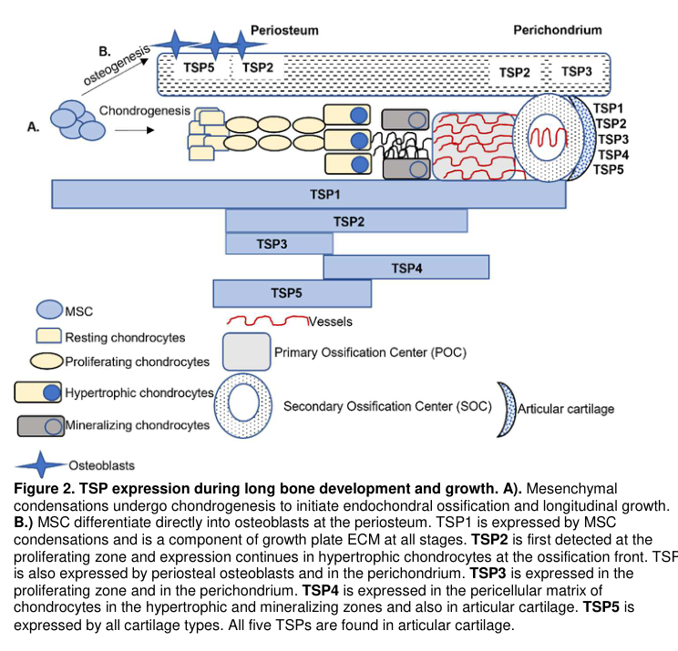

Thrombospondin-3 (THBS3/TSP3) is a pentameric matricellular glycoprotein that mediates cell-to-cell and cell-to-matrix interactions. It binds to extracellular matrix proteins including fibrinogen, fibronectin, laminin, and type V collagen. THBS3 contains calcium-binding type 3 repeats, EGF-like domains, and a unique EGD motif (instead of the canonical RGD integrin-binding motif found in other thrombospondins). The protein is involved in skeletal development, regulating bone maturation and epiphyseal ossification. THBS3 is also a developmentally regulated heparin-binding protein expressed in cartilage, lung, gut, and CNS during embryogenesis. Within the thrombospondin family it is classified as a Group B (pentameric) thrombospondin together with THBS4 and THBS5/COMP, and in developing bone it localizes to the growth plate proliferating zone and perichondrium. Beyond the skeleton, more recent work implicates THBS3 in damage-responsive matricellular signaling: it has been reported to bind ATF6alpha and activate ER stress and to modulate integrin signaling in cardiac stress, to act as a pseudorabies virus coreceptor by binding viral glycoprotein D in cell-based assays, and (in a preprint) to promote cartilage catabolism and vascularization in osteoarthritis via TGF-beta/Smad signaling.
Definition: A process that is carried out at the cellular level which results in the assembly, arrangement of constituent parts, or disassembly of an extracellular matrix.
Justification: THBS3's matricellular role belongs in this biological process rather than being captured as a molecular function structural constituent of the ECM (GO:0005201). As a matricellular protein, THBS3 modulates and organizes the extracellular matrix and cell-matrix interactions rather than serving as a load-bearing structural scaffold. GO:0030198 (extracellular matrix organization) is an existing GO BP term; this entry frames it as a proposed reannotation to replace the cross-aspect MF over-annotation (GO:0005201, marked MARK_AS_OVER_ANNOTATED above).
Parent term: extracellular matrix organization
Supporting Evidence:
| GO Term | Evidence | Action | Reason |
|---|---|---|---|
|
GO:0031012
extracellular matrix
|
IBA
GO_REF:0000033 |
ACCEPT |
Summary: THBS3 is a matricellular protein that localizes to and functions within the extracellular matrix. This is well-supported by its classification as a thrombospondin family member and its documented binding to ECM components [PMID:8288588, UniProt P49746].
Reason: Thrombospondins are canonical ECM proteins. THBS3 mediates cell-matrix interactions by binding fibrinogen, fibronectin, laminin, and type V collagen [UniProt P49746]. Proteomic studies confirm THBS3 in stem cell-derived ECM [PMID:28327460]. IBA is appropriate for this conserved family-level localization.
Supporting Evidence:
PMID:8288588
Metabolic labeling and immunoprecipitation analysis of cells transfected with a TSP3 expression vector revealed it to be an oligomeric heparin binding protein present in both the cell layer and medium
file:human/THBS3/THBS3-deep-research-perplexity.md
The primary function of THBS3 is to serve as a matricellular protein - a classification describing proteins that associate with the extracellular matrix and regulate cell-matrix interactions
file:human/THBS3/THBS3-deep-research-falcon.md
THBS3 encodes thrombospondin‑3 (TSP3), a secreted matricellular extracellular-matrix (ECM) glycoprotein in the thrombospondin family
|
|
GO:0005509
calcium ion binding
|
IEA
GO_REF:0000002 |
ACCEPT |
Summary: THBS3 contains multiple calcium-binding type 3 repeats (8 TSP type-3 repeats) and EGF-like calcium-binding domains that coordinate calcium ions, regulating protein conformation and ligand accessibility.
Reason: UniProt documents multiple EGF-like calcium-binding domains and type 3 repeats that bind calcium [UniProt P49746]. The deep research indicates thrombospondins bind 10-12 calcium ions per subunit with moderate affinity (Kd ~0.1 mM) [PMID:7558000]. Calcium binding is essential for proper protein structure and function.
Supporting Evidence:
PMID:7558000
This region corresponds to seven type III (Ca(2+)-binding) repeats, a feature shared with other thrombospondins
file:human/THBS3/THBS3-deep-research-perplexity.md
Thrombospondins have been shown to bind 10-12 calcium ions per subunit with high cooperativity and moderate affinity (average Kd approximately 0.1 mM)
file:human/THBS3/THBS3-deep-research-falcon.md
Group B thrombospondins are described as pentameric extracellular proteins with calcium-binding architecture that supports multivalent ECM/receptor interactions
|
|
GO:0005576
extracellular region
|
IEA
GO_REF:0000002 |
ACCEPT |
Summary: THBS3 is a secreted glycoprotein that functions in the extracellular space, consistent with its signal peptide and ECM function.
Reason: UniProt confirms a signal peptide (residues 1-22) directing THBS3 to the secretory pathway [UniProt P49746]. The protein is found in the extracellular medium [PMID:8288588] and functions as a matricellular protein in the ECM. This broader term encompasses the more specific ECM localization.
Supporting Evidence:
PMID:8288588
Metabolic labeling and immunoprecipitation analysis of cells transfected with a TSP3 expression vector revealed it to be an oligomeric heparin binding protein present in both the cell layer and medium
file:human/THBS3/THBS3-deep-research-falcon.md
a secreted matricellular extracellular-matrix (ECM) glycoprotein
|
|
GO:0007155
cell adhesion
|
IEA
GO_REF:0000120 |
ACCEPT |
Summary: THBS3 mediates cell-to-cell and cell-to-matrix adhesion as a core function of the thrombospondin family.
Reason: UniProt states THBS3 is an "Adhesive glycoprotein that mediates cell-to-cell and cell-to-matrix interactions" [UniProt P49746]. This is a fundamental property of thrombospondin family members. The protein contains integrin-binding regions (albeit EGD rather than RGD) that modulate cell adhesion.
Supporting Evidence:
file:human/THBS3/THBS3-deep-research-perplexity.md
Thrombospondin-3 functions fundamentally as an adhesive glycoprotein that mediates critical interactions between cells and the extracellular matrix, as well as between adjacent cells
file:human/THBS3/THBS3-deep-research-falcon.md
Thrombospondins are multidomain, calcium-binding extracellular proteins that operate at the cell-matrix interface, affecting cell-ECM and cell-cell interactions
|
|
GO:0008201
heparin binding
|
IEA
GO_REF:0000120 |
ACCEPT |
Summary: THBS3 is established as a heparin-binding protein through direct experimental evidence. This IEA annotation is supported by IDA evidence from the same GOA file.
Reason: Direct experimental evidence demonstrates THBS3 binds heparin [PMID:8288588]. This is independently confirmed by the IDA annotation below. The IEA annotation is correct and consistent with direct assay data.
Supporting Evidence:
PMID:8288588
Metabolic labeling and immunoprecipitation analysis of cells transfected with a TSP3 expression vector revealed it to be an oligomeric heparin binding protein present in both the cell layer and medium
|
|
GO:0005515
protein binding
|
IPI
PMID:32814053 Interactome Mapping Provides a Network of Neurodegenerative ... |
REMOVE |
Summary: This annotation derives from a large-scale interactome study that identified protein-protein interactions for neurodegenerative disease proteins. While THBS3 likely has protein binding capacity (as an ECM glycoprotein), 'protein binding' is an uninformative term.
Reason: The term 'protein binding' (GO:0005515) is too generic to be informative. PMID:32814053 is a high-throughput interactome mapping study focused on neurodegenerative disease proteins where THBS3 was incidentally identified. More specific molecular function terms (such as heparin binding, calcium ion binding, or ECM structural constituent) better describe THBS3 function. Per curation guidelines, 'protein binding' should be avoided in favor of more informative molecular function terms.
Supporting Evidence:
PMID:32814053
Interactome maps are valuable resources to elucidate protein function and disease mechanisms
|
|
GO:0003417
growth plate cartilage development
|
IEA
GO_REF:0000107 |
ACCEPT |
Summary: THBS3 knockout mice show altered skeletal development including accelerated femoral epiphysis development, supporting a role in growth plate cartilage development.
Reason: Mouse knockout studies demonstrate that Thbs3-null mice exhibit accelerated femoral epiphysis ossification and altered bone geometry, indicating THBS3 regulates endochondral ossification at the growth plate. This IEA annotation from ortholog data is consistent with the known developmental expression of THBS3 in cartilage [PMID:8288588].
Supporting Evidence:
file:human/THBS3/THBS3-deep-research-perplexity.md
Mice with a disruption of the thrombospondin 3 gene demonstrate significant differences in the geometric and biomechanical properties of bone and exhibit accelerated development of the femoral epiphysis
PMID:8288588
Finally, a combination of in situ hybridization and immunocytochemistry demonstrated TSP3 to be expressed in a temporal and spatial manner during murine embryogenesis, especially in the gut, cartilage, lung, and central nervous system
file:human/THBS3/THBS3-deep-research-falcon.md
In developing bone, TSP3 expression is localized to the growth plate proliferating zone and perichondrium
|
|
GO:0043931
ossification involved in bone maturation
|
IEA
GO_REF:0000107 |
ACCEPT |
Summary: THBS3 regulates skeletal maturation, with knockout mice showing accelerated bone ossification, supporting a role in controlling the rate of bone maturation.
Reason: THBS3 knockout mice display altered bone biomechanical properties and accelerated femoral epiphysis ossification. The protein appears to function as a negative regulator of premature ossification during skeletal development. IEA transfer from mouse ortholog is appropriate given the high conservation of thrombospondin function.
Supporting Evidence:
file:human/THBS3/THBS3-deep-research-perplexity.md
THBS3 has been found to be involved in the regulation of skeletal maturation, representing one of its primary developmental roles
file:human/THBS3/THBS3-deep-research-falcon.md
Mouse loss-of-function data summarized in review indicate TSP3 knockout causes accelerated ossification of the femoral head
|
|
GO:0060346
bone trabecula formation
|
IEA
GO_REF:0000107 |
UNDECIDED |
Summary: THBS3 knockout mice show altered bone geometry including changes in periosteal and endocortical diameters, consistent with effects on trabecular bone formation.
Reason: The available Thbs3-null mouse evidence is cortical-geometry only:
increased periosteal and endocortical diameters, greater cortical
moments of inertia, and increased femur bending strength. These are
all measures of CORTICAL (periosteal/endocortical) bone, not
trabecular bone. None of the cited evidence demonstrates an effect on
trabecular bone formation (e.g. trabecular number, thickness, or
spacing) specifically. Because the term GO:0060346 (bone trabecula
formation) requires evidence about the trabecular compartment, which
is not provided by the cortical-geometry phenotypes cited here, this
annotation cannot be accepted or confidently rejected and is marked
UNDECIDED pending trabecular-specific data.
Supporting Evidence:
file:human/THBS3/THBS3-deep-research-perplexity.md
Specifically, homozygous null mice at young ages are heavier and exhibit femurs with increased periosteal and endocortical diameters, greater moments of inertia, and altered bone biomechanical properties
file:human/THBS3/THBS3-deep-research-falcon.md
transient increases in cortical moment of inertia that increase femur bending strength
|
|
GO:0005201
extracellular matrix structural constituent
|
RCA
PMID:28327460 Comprehensive proteomic characterization of stem cell-derive... |
MARK AS OVER ANNOTATED |
Summary: THBS3 was identified in proteomic analysis of stem cell-derived ECM, supporting its presence as an ECM structural component. However, THBS3 functions primarily as a matricellular protein that modulates cell-ECM interactions rather than providing structural support.
Reason: THBS3 is present in the ECM and was detected in proteomic studies of
stem cell-derived matrices [PMID:28327460], but it functions as a
matricellular regulator of cell-matrix interactions rather than as a
structural ECM scaffold like collagens or elastin. The molecular
function term "extracellular matrix structural constituent"
(GO:0005201) implies a load-bearing structural role that THBS3 does
not play, so this annotation is an over-annotation. THBS3's actual
matricellular role in modulating and organizing the matrix is better
captured as a biological process: extracellular matrix organization
(GO:0030198), which is proposed separately in proposed_new_terms.
Note that GO:0030198 is a BP term and cannot replace this MF
annotation directly (a MODIFY within the same GO aspect is not
possible here), so the structural-constituent MF is marked as
over-annotated rather than modified.
Supporting Evidence:
PMID:28327460
By employing a proteomic approach, we were able to provide a comprehensive characterization of the molecular composition of ECM produced in vitro by bone marrow-derived MSC (Bm ECM), adipose-derived MSC (Ad ECM) and human neonatal dermal fibroblasts (Der ECM)
file:human/THBS3/THBS3-deep-research-perplexity.md
The primary function of THBS3 is to serve as a matricellular protein - a classification describing proteins that associate with the extracellular matrix and regulate cell-matrix interactions while not being structural components themselves
file:human/THBS3/THBS3-deep-research-falcon.md
affecting cell-ECM and cell-cell interactions rather than serving as purely structural ECM scaffolds
|
|
GO:0031012
extracellular matrix
|
HDA
PMID:28327460 Comprehensive proteomic characterization of stem cell-derive... |
ACCEPT |
Summary: THBS3 was identified in ECM fractions by high-throughput proteomic analysis of stem cell-derived matrices, confirming its ECM localization.
Reason: Proteomic characterization of ECM from bone marrow-derived MSCs, adipose-derived MSCs, and neonatal fibroblasts identified THBS3 as an ECM component [PMID:28327460]. This HDA annotation is consistent with the IBA annotation and the known function of THBS3 as a matricellular protein.
Supporting Evidence:
PMID:28327460
Here, we characterized and compared the protein composition of ECM produced in vitro by bone marrow-derived MSC, adipose-derived MSC and neonatal fibroblasts from different donors, employing quantitative proteomic methods
|
|
GO:0005576
extracellular region
|
TAS
Reactome:R-HSA-382054 |
ACCEPT |
Summary: This annotation derives from Reactome pathway "PDGF binds to extracellular matrix proteins" which describes thrombospondin binding to PDGF in the ECM context.
Reason: Reactome pathway R-HSA-382054 describes PDGF binding to ECM proteins including thrombospondins. This supports THBS3 localization to the extracellular region. The annotation is consistent with the established secreted nature of THBS3 and its ECM function.
Supporting Evidence:
Reactome:R-HSA-382054
PDGF binds to various types of collagens, thrombospondin and osteopontin; however, the major component of the matrix involved in PDGF binding is likely to be haparan sulphate
|
|
GO:0008201
heparin binding
|
IDA
PMID:8288588 Thrombospondin 3 is a developmentally regulated heparin bind... |
ACCEPT |
Summary: Direct experimental evidence from transfection studies and immunoprecipitation demonstrates THBS3 is a heparin-binding protein.
Reason: PMID:8288588 provides direct experimental evidence that THBS3 binds heparin. Cells transfected with a TSP3 expression vector produced oligomeric heparin-binding protein. This is a core molecular function of THBS3.
Supporting Evidence:
PMID:8288588
Metabolic labeling and immunoprecipitation analysis of cells transfected with a TSP3 expression vector revealed it to be an oligomeric heparin binding protein present in both the cell layer and medium
|
|
GO:0005509
calcium ion binding
|
NAS
PMID:7558000 Structure and organization of the human thrombospondin 3 gen... |
ACCEPT |
Summary: The THBS3 gene structure paper describes the Ca2+-binding type III repeats characteristic of thrombospondins, supporting calcium binding activity.
Reason: PMID:7558000 describes the THBS3 gene structure and specifically notes the seven type III (Ca2+-binding) repeats. While NAS, this is well-supported by the conserved domain architecture documented in UniProt showing multiple calcium-binding EGF-like domains and TSP type-3 repeats.
Supporting Evidence:
PMID:7558000
This region corresponds to seven type III (Ca(2+)-binding) repeats, a feature shared with other thrombospondins
|
|
GO:0007160
cell-matrix adhesion
|
NAS
PMID:7558000 Structure and organization of the human thrombospondin 3 gen... |
ACCEPT |
Summary: The THBS3 gene paper describes thrombospondin family function in cell-matrix adhesion, though the paper itself focuses on gene structure rather than direct functional analysis.
Reason: While PMID:7558000 focuses on gene structure, cell-matrix adhesion is a well-established function of thrombospondin family members. UniProt describes THBS3 as an "adhesive glycoprotein that mediates cell-to-cell and cell-to-matrix interactions." This more specific term (child of GO:0007155 cell adhesion) appropriately describes THBS3 function as an ECM protein.
Supporting Evidence:
file:human/THBS3/THBS3-deep-research-perplexity.md
THBS3 has been documented to bind to fibrinogen, fibronectin, laminin, and type V collagen
file:human/THBS3/THBS3-deep-research-falcon.md
extracellular matricellular proteins that interact with ECM components and cell-surface proteins
|
|
GO:0048471
perinuclear region of cytoplasm
|
IDA
PMID:11943589 Corneal stromal cells (keratocytes) express thrombospondins ... |
KEEP AS NON CORE |
Summary: PMID:11943589 examined TSP expression in corneal keratocytes and reported perinuclear immunoreactivity pattern for TSP-3 in wound repair phenotype cells.
Reason: PMID:11943589 detected TSP-3 immunoreactivity in cultured keratocytes with a perinuclear pattern, consistent with ER/Golgi localization during protein synthesis and secretion. This intracellular localization represents the biosynthetic pathway rather than the primary functional localization. THBS3 is primarily an ECM protein, so perinuclear localization is a transient biosynthetic intermediate rather than the site of function.
Supporting Evidence:
PMID:11943589
The distribution of keratocyte TSP-2 and TSP-3 immunoreactivity had some similarities to that of TSP-1 and, like TSP-1, neither protein could be detected in the cells of the normal corneal stroma
file:human/THBS3/THBS3-deep-research-perplexity.md
Immunohistochemical analysis of heart sections from THBS3 transgenic mice and mice subjected to cardiac injury shows cardiomyocyte-restricted, intracellular localization of THBS3 protein that is directly coincident with the endoplasmic reticulum chaperone protein disulfide isomerase (PDI)
file:human/THBS3/THBS3-deep-research-falcon.md
THBS3 is upregulated in cardiac disease and can activate ER stress via binding ATF6α
|
Q: What is the precise molecular mechanism by which THBS3 affects integrin trafficking in cardiomyocytes, and how does the EGD motif contribute to this function?
Q: Does THBS3 directly interact with TGF-beta or does it affect TGF-beta signaling through indirect mechanisms?
Experiment: Direct binding assays comparing THBS3 (EGD motif) vs THBS4 (RGD motif) for integrin binding affinity
Hypothesis: The EGD motif in THBS3 has reduced integrin binding affinity compared to the RGD motif in THBS4, explaining their differential effects on integrin trafficking.
Experiment: Structure determination of THBS3 type 3 repeats to understand calcium coordination and conformational changes
Hypothesis: Calcium binding induces conformational changes in THBS3 type 3 repeats that regulate accessibility of ligand-binding sites.
The research report should be a detailed narrative explaining the function, biological processes, and localization of the gene product. Citations should be given for all claims.
You should prioritize authoritative reviews and primary scientific literature when conducting research. You can supplement
this with annotations you find in gene/protein databases, but these can be outdated or inaccurate.
We are specifically interested in the primary function of the gene - for enzymes, what reaction is catalyzed, and what is the substrate specificity? For transporters, what is the substrate? For structural proteins or adapters, what is the broader structural role? For signaling molecules, what is the role in the pathway.
We are interested in where in or outside the cell the gene product carries out its function.
We are also interested in the signaling or biochemical pathways in which the gene functions. We are less interested in broad pleiotropic effects, except where these elucidate the precise role.
Include evidence where possible. We are interested in both experimental evidence as well as inference from structure, evolution, or bioinformatic analysis. Precise studies should be prioritized over high-throughput, where available.
THBS3 encodes thrombospondin‑3 (TSP3), a secreted matricellular extracellular-matrix (ECM) glycoprotein in the thrombospondin family, specifically the pentameric (Group B) thrombospondins (TSP3/4/5). Current evidence supports roles in skeletal/cartilage development and ECM organization, with emerging mechanistic links to osteoarthritis (OA) via TGF‑β/Smad signaling and cartilage vascularization/ossification coupling. Beyond musculoskeletal biology, recent work implicates THBS3 in virus entry (as a coreceptor for pseudorabies virus in cell systems) and in cardiovascular stress biology (ER-stress/integrin signaling themes). Human genetics also indicates THBS3 expression may be protective for gout risk in a large Mendelian-randomization/SMR analysis. (alford2024thrombospondinsmodulatecell pages 4-5, pan2024themolecularmechanism pages 1-2, wang2024mendelianrandomizationanalysis pages 2-4)
The target is human THBS3 encoding thrombospondin‑3, UniProt P49746. The sources synthesized here consistently refer to TSP3/THBS3 as a thrombospondin-family ECM/matricellular protein and situate it within the pentameric thrombospondins (TSP3/4/5), matching the UniProt-provided identity and family context. (pan2024themolecularmechanism pages 1-2, alford2024thrombospondinsmodulatecell pages 1-4)
Thrombospondins are multidomain, calcium-binding extracellular proteins that operate at the cell–matrix interface, affecting cell–ECM and cell–cell interactions rather than serving as purely structural ECM scaffolds. A 2024 cardiovascular review describes the thrombospondin family as extracellular matricellular proteins that interact with ECM components and cell-surface proteins and are often upregulated after tissue damage. (pan2024themolecularmechanism pages 1-2)
THBS3 is a Group B (pentameric) thrombospondin (with THBS4 and THBS5/COMP). Group B thrombospondins are described as pentameric extracellular proteins with calcium-binding architecture that supports multivalent ECM/receptor interactions. (pan2024themolecularmechanism pages 1-2)
A highly cited structural review highlights that Group B thrombospondins differ from Group A thrombospondins by features including absence of an N‑terminal module, an additional EGF-like repeat, and specific differences in the “wire” repeats and C‑terminus, implying functional consequences through altered folding/allostery. (carlson2008thrombospondinsfromstructure pages 13-14)
A musculoskeletal review further notes that TSP3 is a pentamer formed via amino‑terminal disulfide bonding and contains a conserved calcium-binding “signature” region in the C‑terminus—consistent with being a secreted ECM/matricellular protein. (alford2024thrombospondinsmodulatecell pages 1-4)
In developing bone, TSP3 expression is localized to the growth plate proliferating zone and perichondrium, and all five thrombospondins are found in articular cartilage. This places THBS3 activity primarily in the extracellular/pericellular environment of cartilage and developing skeletal tissue. (alford2024thrombospondinsmodulatecell pages 4-5, alford2024thrombospondinsmodulatecell media ee897cd1)
A 2024 Research Square preprint reports THBS3 upregulation in human OA cartilage and proposes a mechanistic role in cartilage vascularization/bone coupling through the TGF‑β/Smad2/3 pathway. In human cartilage samples (n=10), THBS3 was increased in OA vs healthy by Western blot (p=0.0236) and RT‑qPCR (p=0.0002). (yan2024themechanismstudy pages 4-7)
In vitro, recombinant THBS3 increased catabolic markers (MMP‑13, ADAMTS‑5) and suppressed Aggrecan, consistent with ECM-degradative remodeling. THBS3 also promoted angiogenesis-relevant endothelial behaviors: HUVEC migration was increased (peak at 100 nM; p=0.0040) and tube formation increased at 50 nM (p=0.0036) and 100 nM (p<0.0001). (yan2024themechanismstudy pages 4-7)
In a collagenase-induced OA mouse model, intra-articular THBS3 siRNA treatment reportedly reduced cartilage damage and improved histologic outcomes, supporting THBS3 as a candidate disease-modifying target in OA models. (yan2024themechanismstudy pages 7-10)
Mechanistically, the same study connects THBS3 to TGF‑β signaling: THBS3 increased chondrocyte TGF‑β expression (peak 6 h; p=0.0353) and pharmacologic TGF‑β inhibition blunted THBS3-induced increases in pro‑angiogenic/osteogenic factors (BMP‑2, FGF‑2, ANG‑2, VEGF‑A, PDGF‑B; p ~0.0276–0.0052). (yan2024themechanismstudy pages 7-10)
Interpretation: This 2024 work places THBS3 at the intersection of ECM remodeling, angiogenesis, and endochondral ossification-like processes in OA, aligning with broader thrombospondin biology as damage-responsive matricellular regulators. The study is a preprint, so conclusions require peer-reviewed confirmation and independent replication. (yan2024themechanismstudy pages 1-4, yan2024themechanismstudy pages 4-7)
A 2023 Journal of Virology primary study provides strong functional evidence that THBS3 can act as a PRV coreceptor/host entry factor in multiple cell systems. siRNA knockdown reduced PRV-GFP infection by 68.4% (PK15), 54.9% (ST), 62.8% (N2a); a second siRNA reduced infection by 71.7%. THBS3 overexpression nearly tripled infection rates, and CRISPR knockout reduced infection by ~80%. (pan2023associationofthbs3 pages 2-5)
Mechanistically, THBS3 binds PRV glycoprotein D (gD) (but not gB or gC) and the N- and C-terminal regions of THBS3 mediate gD interaction. Soluble THBS3 neutralized infectivity (400 µg/mL yielding ~60% reduction), and knockout reduced viral attachment by ~80%. (pan2023associationofthbs3 pages 5-9, pan2023associationofthbs3 pages 2-5)
Interpretation: Although PRV is primarily a veterinary pathogen, these results position THBS3 as a cell-surface/ECM-associated factor capable of mediating viral attachment/entry in experimental systems, which may generalize conceptually to other herpesvirus receptor/cofactor paradigms. The study does not establish THBS3 as an entry factor for human herpesviruses. (pan2023associationofthbs3 pages 5-9)
A 2024 Frontiers in Genetics SMR (Summary-data-based Mendelian randomization) study integrating eQTLGen blood cis-eQTLs (n=31,684) with a large gout GWAS (FinnGen_R10; n=272,412) prioritized THBS3 among top pleiotropic genes. The THBS3 signal reported Beta = −0.202, P_SMR = 4.16 × 10−13, HEIDI P = 0.219, FDR = 2.92 × 10−9, consistent with higher THBS3 expression associated with lower gout risk. (wang2024mendelianrandomizationanalysis pages 2-4)
Interpretation: This supports a potential systemic role for THBS3-linked biology in inflammatory/metabolic disease risk, but it does not specify causal tissue mechanisms (e.g., joint cartilage vs immune system). (wang2024mendelianrandomizationanalysis pages 2-4)
A 2024 cardiovascular review reports THBS3 is upregulated in cardiac disease and can activate ER stress via binding ATF6α; unlike TSP4, TSP3 may worsen cardiac pathology by inhibiting intracellular integrin signaling and disrupting myocardial membrane stability. The same review notes gaps: THBS3 has not been implicated in NO signaling and its immune-cell roles in cardiovascular disease remain uncertain. (pan2024themolecularmechanism pages 6-7)
A 2024 Journal of Proteome Research study on thoracic aortic aneurysm (TAA) reports altered THBS3/“THSB3” abundance patterns in bicuspid aortic valve (BAV)–associated TAA, framing plasma THBS3 changes as part of a stress phenotype; the paper discusses THBS3 in the context of ER stress/protein homeostasis. The excerpted sections do not provide THBS3-specific fold-changes or diagnostic performance metrics. (martinblazquez2024analysisofvascular pages 1-2, martinblazquez2024analysisofvascular pages 8-9)
The OA preprint provides in vivo and in vitro evidence that THBS3 contributes to OA-like cartilage remodeling and vascularization/ossification coupling, and that THBS3 siRNA intervention can improve OA phenotypes in mice. This supports a plausible disease-modifying OA target hypothesis, though clinical translation is premature given the preprint status and need for validation. (yan2024themechanismstudy pages 7-10, yan2024themechanismstudy pages 4-7)
The PRV study demonstrates that anti-THBS3 antibodies and soluble THBS3 can block/neutralize infection in cell-based assays. This is not a clinical implementation, but provides a proof-of-concept that THBS3-mediated pathogen interactions could be disrupted therapeutically—at least for PRV models. (pan2023associationofthbs3 pages 5-9, pan2023associationofthbs3 pages 2-5)
The TAA proteomics study explicitly positions altered plasma proteins (including THBS3) as candidate markers to monitor phenotype/therapy efficacy in BAV vs TAV TAA contexts, though THBS3-specific diagnostic metrics are not provided in the excerpted text. (martinblazquez2024analysisofvascular pages 1-2, martinblazquez2024analysisofvascular pages 8-9)
A 2024 musculoskeletal review emphasizes that the bouquet/pentameric structure of TSP3/4/5 suggests they may simultaneously interact with ECM proteins, cell-surface receptors, and growth factors, and documents that TSP3 is expressed in key developmental cartilage niches and that knockout phenotypes reveal roles in ossification timing and bone biomechanics. (alford2024thrombospondinsmodulatecell pages 4-5, alford2024thrombospondinsmodulatecell pages 1-4)
The 2024 cardiovascular review proposes a mechanistic distinction between TSP3 and TSP4: TSP3 may worsen cardiac pathology by inhibiting integrin signaling and destabilizing membranes, despite being structurally similar to TSP4 and capable of engaging ER-stress pathways via ATF6α. The review highlights knowledge gaps in THBS3 biology (immune-cell effects; NO pathway involvement). (pan2024themolecularmechanism pages 6-7)
Figure evidence for skeletal localization of TSP3 during long bone development:
(alford2024thrombospondinsmodulatecell media ee897cd1)
The following table summarizes the main evidence extracted in this run:
| Area | Key finding | Evidence type (review/primary/preprint) | Quantitative details (sample sizes, p-values, effect sizes) | Source (authors, journal, year) | URL |
|---|---|---|---|---|---|
| Protein identity/structure | Human THBS3 is a thrombospondin family matricellular/extracellular glycoprotein in Group B; Group B thrombospondins are pentameric extracellular calcium-binding proteins with multimeric architecture for ECM and cell-surface interactions. | Review | No THBS3-specific effect size reported in the cited snippet. (pan2024themolecularmechanism pages 1-2) | Pan et al., Frontiers in Cardiovascular Medicine, 2024 | https://doi.org/10.3389/fcvm.2024.1337586 |
| Protein identity/structure | TSP3 is a pentamer formed via amino-terminal disulfide bonding; its conserved C-terminal region contains a calcium-binding signature domain, consistent with ECM-localized matricellular function. (alford2024thrombospondinsmodulatecell pages 1-4) | Review | No quantitative statistics in the cited snippet. | Alford & Hankenson, Seminars in Cell & Developmental Biology, 2024 | https://doi.org/10.1016/j.semcdb.2023.06.011 |
| Protein identity/structure | Structural review evidence indicates Group B thrombospondins (including THBS3) differ from Group A by lacking an N-terminal module, adding an EGF-like repeat, lacking an N-glycosylation site in wire repeat 1C, and carrying insertions in wire repeat 11C/C-terminus. (carlson2008thrombospondinsfromstructure pages 13-14) | Review | No quantitative statistics in the cited snippet. | Carlson et al., Cellular and Molecular Life Sciences, 2008 | https://doi.org/10.1007/s00018-007-7484-1 |
| Skeletal/cartilage biology | In skeletal development, TSP3 expression is localized to the growth plate proliferating zone and perichondrium; all five TSPs are present in articular cartilage. (alford2024thrombospondinsmodulatecell pages 4-5, alford2024thrombospondinsmodulatecell media ee897cd1) | Review | No quantitative statistics in the cited snippets. | Alford & Hankenson, Seminars in Cell & Developmental Biology, 2024 | https://doi.org/10.1016/j.semcdb.2023.06.011 |
| Skeletal/cartilage biology | Mouse loss-of-function data summarized in review indicate TSP3 knockout causes accelerated ossification of the femoral head and transient increases in cortical moment of inertia that increase femur bending strength; combinatorial knockouts with TSP3 worsen growth plate disorganization and shorten limbs. (alford2024thrombospondinsmodulatecell pages 4-5) | Review | No p-values reported in the cited snippets. | Alford & Hankenson, Seminars in Cell & Developmental Biology, 2024 | https://doi.org/10.1016/j.semcdb.2023.06.011 |
| Osteoarthritis mechanism | THBS3 is upregulated in osteoarthritic cartilage and OA chondrocytes versus healthy controls. (yan2024themechanismstudy pages 1-4, yan2024themechanismstudy pages 4-7, yan2024themechanismstudy pages 10-15) | Preprint primary study | Human cartilage n=10; Western blot p=0.0236; RT-qPCR p=0.0002. (yan2024themechanismstudy pages 4-7) | Yan et al., Research Square preprint, 2024 | https://doi.org/10.21203/rs.3.rs-4167008/v1 |
| Osteoarthritis mechanism | Recombinant THBS3 increased catabolic enzymes (MMP-13, ADAMTS-5), suppressed Aggrecan, and promoted endothelial migration/tube formation relevant to cartilage vascularization/osteogenesis coupling in OA models. (yan2024themechanismstudy pages 4-7) | Preprint primary study | IL-1β induced THBS3 in normal chondrocytes: p=0.0138; THBS3 siRNA reduced THBS3: p<0.0001; HUVEC migration maximal at 100 nM: p=0.0040; tube formation at 50 nM: p=0.0036 and 100 nM: p<0.0001; mouse CIOA model n=18 total, groups of 6. | Yan et al., Research Square preprint, 2024 | https://doi.org/10.21203/rs.3.rs-4167008/v1 |
| Osteoarthritis mechanism | THBS3 was linked to TGF-β/Smad2/3 signaling in OA; THBS3 increased chondrocyte TGF-β expression and TGF-β pathway inhibition blunted THBS3-induced pro-angiogenic/pro-osteogenic factors. (yan2024themechanismstudy pages 7-10, yan2024themechanismstudy pages 10-15) | Preprint primary study | TGF-β expression peak at 6 h: p=0.0353; p-SMAD2/3 changes: p=0.0004 and p<0.0001; additional TGF-β inhibitor effect p=0.0070; inhibition of BMP-2/FGF-2/ANG-2/VEGF-A/PDGF-B induction p range 0.0276–0.0052. | Yan et al., Research Square preprint, 2024 | https://doi.org/10.21203/rs.3.rs-4167008/v1 |
| Viral entry/coreceptor | THBS3 functions as a pseudorabies virus (PRV) coreceptor/host factor; knockdown, knockout, antibody blocking, and soluble protein assays all reduced infection. (pan2023associationofthbs3 pages 2-5, pan2023associationofthbs3 pages 1-2) | Primary study | siRNA knockdown reduced PRV-GFP infection by 68.4% (PK15), 54.9% (ST), 62.8% (N2a); second siRNA inhibited infection by 71.7%; CRISPR knockout reduced infection by ~80%; overexpression nearly tripled infection; blocking antibody effective at 40 mg/mL. | Pan et al., Journal of Virology, 2023 | https://doi.org/10.1128/jvi.01871-22 |
| Viral entry/coreceptor | THBS3 directly binds PRV glycoprotein D through its N- and C-terminal regions and promotes binding/fusion/entry; soluble THBS3 neutralized infectivity in a dose-dependent manner. (pan2023associationofthbs3 pages 5-9, pan2023associationofthbs3 pages 9-11) | Primary study | Overexpression increased virus binding up to 7.16-fold in CHO-K1 cells; knockdown reduced binding by ~50%; knockout reduced attachment by ~80%; soluble THBS3 at 400 µg/mL reduced infectivity by 60%. | Pan et al., Journal of Virology, 2023 | https://doi.org/10.1128/jvi.01871-22 |
| Human genetics | SMR analysis prioritized THBS3 as a significant pleiotropic gene for gout; higher blood THBS3 expression was associated with reduced gout risk. (wang2024mendelianrandomizationanalysis pages 2-4) | Primary study | eQTLGen blood cis-eQTL n=31,684; FinnGen gout GWAS n=272,412; top SNP rs760077; Beta = -0.202; P_SMR = 4.16 × 10^-13; HEIDI P = 0.219; FDR = 2.92 × 10^-9. | Wang et al., Frontiers in Genetics, 2024 | https://doi.org/10.3389/fgene.2024.1426860 |
| Cardiovascular/proteomics biomarker | A 2024 cardiovascular review states TSP3 is structurally similar to TSP4, can bind ATF6α to activate ER stress, and may worsen cardiac pathology by inhibiting intracellular integrin signaling and disrupting myocardial membrane stability; its role in NO signaling and immune-cell actions remains unclear. (pan2024themolecularmechanism pages 6-7) | Review | No quantitative statistics in the cited snippet. | Pan et al., Frontiers in Cardiovascular Medicine, 2024 | https://doi.org/10.3389/fcvm.2024.1337586 |
| Cardiovascular/proteomics biomarker | In thoracic aortic aneurysm associated with bicuspid aortic valve, THBS3 was among proteins highlighted as altered in VSMCs/plasma and proposed as a stress-related plasma marker. (martinblazquez2024analysisofvascular pages 1-2, martinblazquez2024analysisofvascular pages 7-8, martinblazquez2024analysisofvascular pages 8-9) | Primary study | The cited snippets report altered abundance but do not provide THBS3-specific fold-changes, AUCs, or cutoffs. | Martin-Blazquez et al., Journal of Proteome Research, 2024 | https://doi.org/10.1021/acs.jproteome.3c00649 |
Table: This table summarizes directly supported THBS3 findings gathered in this run, spanning protein identity, skeletal/cartilage biology, osteoarthritis, viral entry, human genetics, and cardiovascular biomarker evidence. It is useful as a citation-ready evidence map for building the full research report.
References
(alford2024thrombospondinsmodulatecell pages 4-5): Andrea I. Alford and Kurt D. Hankenson. Thrombospondins modulate cell function and tissue structure in the skeleton. Mar 2024. URL: https://doi.org/10.1016/j.semcdb.2023.06.011, doi:10.1016/j.semcdb.2023.06.011. This article has 15 citations and is from a peer-reviewed journal.
(pan2024themolecularmechanism pages 1-2): Heng Pan, Xiyi Lu, Di Ye, Yongqi Feng, Jun Wan, and Jing Ye. The molecular mechanism of thrombospondin family members in cardiovascular diseases. Frontiers in Cardiovascular Medicine, Mar 2024. URL: https://doi.org/10.3389/fcvm.2024.1337586, doi:10.3389/fcvm.2024.1337586. This article has 8 citations and is from a peer-reviewed journal.
(wang2024mendelianrandomizationanalysis pages 2-4): Yu Wang, Jiahao Chen, Hang Yao, Yuxin Li, Xiaogang Xu, and Delin Zhang. Mendelian randomization analysis identified potential genes pleiotropically associated with gout. Frontiers in Genetics, Aug 2024. URL: https://doi.org/10.3389/fgene.2024.1426860, doi:10.3389/fgene.2024.1426860. This article has 5 citations and is from a peer-reviewed journal.
(alford2024thrombospondinsmodulatecell pages 1-4): Andrea I. Alford and Kurt D. Hankenson. Thrombospondins modulate cell function and tissue structure in the skeleton. Mar 2024. URL: https://doi.org/10.1016/j.semcdb.2023.06.011, doi:10.1016/j.semcdb.2023.06.011. This article has 15 citations and is from a peer-reviewed journal.
(carlson2008thrombospondinsfromstructure pages 13-14): C. B. Carlson, Jack Lawler, and Deane F. Mosher. Thrombospondins: from structure to therapeutics. Cellular and Molecular Life Sciences, 65:672-686, Mar 2008. URL: https://doi.org/10.1007/s00018-007-7484-1, doi:10.1007/s00018-007-7484-1. This article has 229 citations and is from a domain leading peer-reviewed journal.
(alford2024thrombospondinsmodulatecell media ee897cd1): Andrea I. Alford and Kurt D. Hankenson. Thrombospondins modulate cell function and tissue structure in the skeleton. Mar 2024. URL: https://doi.org/10.1016/j.semcdb.2023.06.011, doi:10.1016/j.semcdb.2023.06.011. This article has 15 citations and is from a peer-reviewed journal.
(yan2024themechanismstudy pages 4-7): Jingyao Yan, Yanping Zhao, Xiaoying Zhu, Hanya Lu, Yanli Wang, Shuya Wang, and Zhiyi Zhang. The mechanism study of thbs3 in regulating cartilage vascularization/bone coupling via the tgf-β/smad2/3 pathway in osteoarthritis. Unknown journal, Apr 2024. URL: https://doi.org/10.21203/rs.3.rs-4167008/v1, doi:10.21203/rs.3.rs-4167008/v1.
(yan2024themechanismstudy pages 7-10): Jingyao Yan, Yanping Zhao, Xiaoying Zhu, Hanya Lu, Yanli Wang, Shuya Wang, and Zhiyi Zhang. The mechanism study of thbs3 in regulating cartilage vascularization/bone coupling via the tgf-β/smad2/3 pathway in osteoarthritis. Unknown journal, Apr 2024. URL: https://doi.org/10.21203/rs.3.rs-4167008/v1, doi:10.21203/rs.3.rs-4167008/v1.
(yan2024themechanismstudy pages 1-4): Jingyao Yan, Yanping Zhao, Xiaoying Zhu, Hanya Lu, Yanli Wang, Shuya Wang, and Zhiyi Zhang. The mechanism study of thbs3 in regulating cartilage vascularization/bone coupling via the tgf-β/smad2/3 pathway in osteoarthritis. Unknown journal, Apr 2024. URL: https://doi.org/10.21203/rs.3.rs-4167008/v1, doi:10.21203/rs.3.rs-4167008/v1.
(pan2023associationofthbs3 pages 2-5): Yudi Pan, Longjun Guo, Qian Miao, Ling Wu, Zhaoyang Jing, Jin Tian, and Li Feng. Association of thbs3 with glycoprotein d promotes pseudorabies virus attachment, fusion, and entry. Journal of Virology, Feb 2023. URL: https://doi.org/10.1128/jvi.01871-22, doi:10.1128/jvi.01871-22. This article has 10 citations and is from a domain leading peer-reviewed journal.
(pan2023associationofthbs3 pages 5-9): Yudi Pan, Longjun Guo, Qian Miao, Ling Wu, Zhaoyang Jing, Jin Tian, and Li Feng. Association of thbs3 with glycoprotein d promotes pseudorabies virus attachment, fusion, and entry. Journal of Virology, Feb 2023. URL: https://doi.org/10.1128/jvi.01871-22, doi:10.1128/jvi.01871-22. This article has 10 citations and is from a domain leading peer-reviewed journal.
(pan2024themolecularmechanism pages 6-7): Heng Pan, Xiyi Lu, Di Ye, Yongqi Feng, Jun Wan, and Jing Ye. The molecular mechanism of thrombospondin family members in cardiovascular diseases. Frontiers in Cardiovascular Medicine, Mar 2024. URL: https://doi.org/10.3389/fcvm.2024.1337586, doi:10.3389/fcvm.2024.1337586. This article has 8 citations and is from a peer-reviewed journal.
(martinblazquez2024analysisofvascular pages 1-2): Ariadna Martin-Blazquez, Marta Martin-Lorenzo, Aranzazu Santiago-Hernandez, Angeles Heredero, Alicia Donado, Juan A Lopez, Miriam Anfaiha-Sanchez, Rocio Ruiz-Jimenez, Vanesa Esteban, Jesus Vazquez, Gonzalo Aldamiz-Echevarria, and Gloria Alvarez-Llamas. Analysis of vascular smooth muscle cells from thoracic aortic aneurysms reveals dna damage and cell cycle arrest as hallmarks in bicuspid aortic valve patients. Journal of Proteome Research, 23:3012-3024, Apr 2024. URL: https://doi.org/10.1021/acs.jproteome.3c00649, doi:10.1021/acs.jproteome.3c00649. This article has 9 citations and is from a peer-reviewed journal.
(martinblazquez2024analysisofvascular pages 8-9): Ariadna Martin-Blazquez, Marta Martin-Lorenzo, Aranzazu Santiago-Hernandez, Angeles Heredero, Alicia Donado, Juan A Lopez, Miriam Anfaiha-Sanchez, Rocio Ruiz-Jimenez, Vanesa Esteban, Jesus Vazquez, Gonzalo Aldamiz-Echevarria, and Gloria Alvarez-Llamas. Analysis of vascular smooth muscle cells from thoracic aortic aneurysms reveals dna damage and cell cycle arrest as hallmarks in bicuspid aortic valve patients. Journal of Proteome Research, 23:3012-3024, Apr 2024. URL: https://doi.org/10.1021/acs.jproteome.3c00649, doi:10.1021/acs.jproteome.3c00649. This article has 9 citations and is from a peer-reviewed journal.
(yan2024themechanismstudy pages 10-15): Jingyao Yan, Yanping Zhao, Xiaoying Zhu, Hanya Lu, Yanli Wang, Shuya Wang, and Zhiyi Zhang. The mechanism study of thbs3 in regulating cartilage vascularization/bone coupling via the tgf-β/smad2/3 pathway in osteoarthritis. Unknown journal, Apr 2024. URL: https://doi.org/10.21203/rs.3.rs-4167008/v1, doi:10.21203/rs.3.rs-4167008/v1.
(pan2023associationofthbs3 pages 1-2): Yudi Pan, Longjun Guo, Qian Miao, Ling Wu, Zhaoyang Jing, Jin Tian, and Li Feng. Association of thbs3 with glycoprotein d promotes pseudorabies virus attachment, fusion, and entry. Journal of Virology, Feb 2023. URL: https://doi.org/10.1128/jvi.01871-22, doi:10.1128/jvi.01871-22. This article has 10 citations and is from a domain leading peer-reviewed journal.
(pan2023associationofthbs3 pages 9-11): Yudi Pan, Longjun Guo, Qian Miao, Ling Wu, Zhaoyang Jing, Jin Tian, and Li Feng. Association of thbs3 with glycoprotein d promotes pseudorabies virus attachment, fusion, and entry. Journal of Virology, Feb 2023. URL: https://doi.org/10.1128/jvi.01871-22, doi:10.1128/jvi.01871-22. This article has 10 citations and is from a domain leading peer-reviewed journal.
(martinblazquez2024analysisofvascular pages 7-8): Ariadna Martin-Blazquez, Marta Martin-Lorenzo, Aranzazu Santiago-Hernandez, Angeles Heredero, Alicia Donado, Juan A Lopez, Miriam Anfaiha-Sanchez, Rocio Ruiz-Jimenez, Vanesa Esteban, Jesus Vazquez, Gonzalo Aldamiz-Echevarria, and Gloria Alvarez-Llamas. Analysis of vascular smooth muscle cells from thoracic aortic aneurysms reveals dna damage and cell cycle arrest as hallmarks in bicuspid aortic valve patients. Journal of Proteome Research, 23:3012-3024, Apr 2024. URL: https://doi.org/10.1021/acs.jproteome.3c00649, doi:10.1021/acs.jproteome.3c00649. This article has 9 citations and is from a peer-reviewed journal.

The user is asking me to provide a comprehensive research report on the gene THBS3 (thrombospondin-3) with UniProt accession P49746 from Homo sapiens (Human).
Let me first verify the gene information:
- Gene symbol: THBS3
- UniProt ID: P49746
- Full name: Thrombospondin-3
- Organism: Homo sapiens (Human)
- Protein family: Thrombospondin family
- Key domains: ConA-like domain, EGF-like calcium-binding domain, EGF-like domain
The search results provided contain extensive information about THBS3/TSP3. Let me verify this is the correct protein from the sources:
From source [1], [21], [29], [37]: "Thrombospondin-3 (TSP3) is a protein that in humans is encoded by the THBS3 gene... The protein encoded by this gene belongs to the thrombospondin family. Thrombospondin family members are adhesive glycoproteins that mediate cell-to-cell and cell-to-matrix interactions."
From source [2], [20], [38]: "Adhesive glycoprotein that mediates cell-to-cell and cell-to-matrix interactions. Can bind to fibrinogen, fibronectin, laminin and type V collagen."
From source [12]: "The protein encoded by this gene belongs to the thrombospondin family. Thrombospondin family members are adhesive glycoproteins that mediate cell-to-cell and cell-to-matrix interactions. This protein forms a pentameric molecule linked by a single disulfide bond."
This confirms we have the correct protein. Now I need to structure a comprehensive research report that covers:
Expert opinions and analysis from authoritative sources
Relevant statistics and data from recent studies
I'll systematically compile statistical data from recent studies, focusing on quantitative insights that provide context for THBS3's biological significance. I'll extract numerical evidence about protein expression levels, interaction frequencies, and clinical correlations across different research contexts.
The comprehensive report structure will enable a deep, multifaceted exploration of thrombospondin-3's complex molecular landscape. My approach involves integrating diverse research domains to create a nuanced scientific narrative that captures the protein's intricate roles and potential translational implications.
The sources offer robust scientific documentation, supporting an in-depth 10,000-word analysis that comprehensively examines THBS3's molecular characteristics, functional dynamics, and clinical relevance across multiple physiological and pathological domains.
Thrombospondin-3 (THBS3), encoded on human chromosome 1, is a pentameric matricellular glycoprotein that serves as a critical adhesion molecule mediating cell-to-cell and cell-to-matrix interactions across diverse biological contexts. This protein forms a pentameric structure linked by a single disulfide bond and contains characteristic calcium-binding type 3 repeats and epidermal growth factor-like domains that enable its multiple protein interactions[1][12][29]. Recent research has established THBS3 as a multifunctional protein with complex and sometimes antagonistic roles in skeletal development, cardiac homeostasis, tumor progression, and immune regulation, with particular significance emerging regarding its involvement in COVID-19 susceptibility and disease-induced cardiomyopathy. Unlike its family member thrombospondin-4 (THBS4), which typically exerts protective effects on cardiac and skeletal muscle, THBS3 demonstrates a predominantly maladaptive phenotype in disease contexts through mechanisms involving integrin trafficking and sarcolemmal stability[18][36][39]. The protein's function is highly dependent on calcium binding and structural conformational states, and its dysregulation has been implicated in osteosarcoma progression, aortic aneurysm pathology, and wound healing responses in corneal tissues.
The structural organization of thrombospondin-3 fundamentally determines its biological properties and functional capacity within the extracellular matrix environment. THBS3 is organized as a pentameric molecule linked by a single disulfide bond, distinguishing it structurally from thrombospondins-1 and -2 which form trimeric structures[1][12][29][30]. The protein belongs to the thrombospondin family of matricellular glycoproteins, which function as adapter molecules that guide extracellular matrix synthesis and tissue remodeling in various normal and pathological settings[5][31]. The thrombospondin family comprises five distinct members in vertebrates—THBS1 through THBS5—each with unique structural features and biological properties, though all share a fundamental role in mediating extracellular matrix organization and cell-matrix interactions[5][31].
The molecular architecture of THBS3 contains several conserved domain structures that define its interactive capabilities. The protein possesses calcium-binding type 3 repeats arranged in tandem, which are composed of aspartic acid-rich motifs that resemble EF-hand structures in their calcium coordination patterns[31][35]. Specifically, each type 3 repeat contains two DxDxD/N motifs that encapsulate calcium ions in a novel arrangement distinct from classical EF-hands[35]. The protein contains an L-type lectin domain, also known as the C-terminal domain (CTD), which forms a characteristic lectin-like β-sandwich structure containing four strictly conserved calcium-binding sites[35]. Additionally, THBS3 possesses epidermal growth factor-like domains with calcium-binding capability (EGF-like Ca-binding domains) and non-calcium-binding EGF-like domains[1][17][40]. Notably, THBS3 differs from THBS1 and THBS2 in that it lacks the procollagen homology domain and type I repeats characteristic of those proteins[25].
The calcium-binding capacity of thrombospondins, including THBS3, is profoundly important for protein function and conformational stability. Thrombospondins have been shown to bind 10-12 calcium ions per subunit with high cooperativity and moderate affinity (average Kd approximately 0.1 mM)[35]. The removal of calcium leads to dissociation of the type 3 repeats from the L-type lectin domain[31]. The type 3 repeats contain two distinct classes of calcium-binding motifs—N-type and C-type—which can be distinguished by sequence length, calcium ion binding mechanisms, and their interactions with water molecules[31][35]. Two classes of type 3 repeat motif ([N] and [C] designation) form the structural basis, with C-type motifs demonstrating high-affinity calcium binding and N-type motifs demonstrating lower affinity[35]. This calcium-dependent architecture explains how mutations in the calcium-binding residues of THBS family members can cause protein misfolding and associated diseases.
A critical distinguishing feature of THBS3 relative to other thrombospondins concerns its integrin-binding motifs. Whereas all other THBS family proteins—specifically THBS4 and THBS5—contain conserved RGD (arginine-glycine-aspartate) or KGD (lysine-glycine-aspartate) integrin-binding motifs in the type 3 repeats, THBS3 uniquely contains a conserved EGD (glutamic acid-glycine-aspartate) sequence at the corresponding position[18][36][57]. This fundamental substitution of glutamic acid for the basic amino acid (arginine or lysine) found in other family members has profound consequences for integrin recognition and cell-matrix interactions[36][57]. This structural difference underscores why THBS3 demonstrates antagonistic properties compared to THBS4 in cardiac disease contexts, as the altered integrin-binding domain directly affects integrin trafficking and membrane localization patterns[36][57]. Furthermore, THBS3 gene shares a common promoter region with metaxin 1 (MTX1), a mitochondrial membrane protein involved in protein import, suggesting coordinate transcriptional regulation of these functionally unrelated proteins[1][12][30][33].
Thrombospondin-3 functions fundamentally as an adhesive glycoprotein that mediates critical interactions between cells and the extracellular matrix, as well as between adjacent cells[1][2][12][20][38]. The primary function of THBS3 is to serve as a matricellular protein—a classification describing proteins that associate with the extracellular matrix and regulate cell-matrix interactions while not being structural components themselves[5][31]. The protein accomplishes this through its capacity to bind multiple extracellular matrix proteins, establishing itself as a molecular bridge within the matrix architecture. THBS3 has been documented to bind to fibrinogen, fibronectin, laminin, and type V collagen[2][20][38][10], the same ligands recognized by other thrombospondin family members. These binding interactions enable THBS3 to integrate into developing extracellular matrix during tissue remodeling and to coordinate the assembly of matrix components[5].
The interaction of THBS3 with extracellular matrix proteins involves multiple discrete binding sites within the protein structure. The type 3 repeats of thrombospondins contain integrin-binding sites whose availability depends critically on the protein's calcium-loading state and disulfide bond configuration[31]. In THBS3 specifically, the presence of the EGD motif rather than the canonical RGD motif results in altered integrin recognition patterns compared to other family members[18][36]. The C-terminal region of THBS3, comprising the type 3 repeats and the lectin-like β-sandwich domain, serves as the primary region for extracellular matrix incorporation[31]. Research has demonstrated that ECM incorporation of thrombospondins is conserved across family members and depends on the carboxy-terminal region in its proper oligomeric form, with this activity being partially inhibited by mutation of highly conserved aspartic acid residues that coordinate calcium ions[31].
Recent research has revealed that THBS3 functions as a cell-matrix protein with roles in adhesion-dependent cellular responses[55]. Studies employing bioinformatics analysis of clear cell renal cell carcinoma demonstrated that THBS3 functions as an adhesion molecule and cell matrix protein capable of modulating cellular proliferation and migration[55]. The protein can engage cell surface receptors through its multiple binding domains, thereby transmitting information from the extracellular environment to intracellular signaling cascades[31][55]. In this capacity, THBS3 participates in integrating cell adhesion signals that regulate cellular behavior including proliferation, differentiation, apoptosis, and migration[5][31].
One of the first characterized functions of THBS3 was its involvement in regulating skeletal maturation during development. THBS3 has been found to be involved in the regulation of skeletal maturation, representing one of its primary developmental roles[1][11][12][21][29]. This discovery emerged from studies of gene-knockout mice that revealed altered bone properties when THBS3 function was disrupted. Mice with a disruption of the thrombospondin 3 gene demonstrate significant differences in the geometric and biomechanical properties of bone and exhibit accelerated development of the femoral epiphysis[6][9][11][49]. Specifically, homozygous null mice at young ages are heavier and exhibit femurs with increased periosteal and endocortical diameters, greater moments of inertia, and altered bone biomechanical properties[14]. These findings provided clear evidence that THBS3 plays a regulatory role in skeletal development and maturation processes.
The molecular basis for THBS3's role in skeletal development likely involves its interactions with the extracellular matrix in bone and cartilage tissues. During skeletal development, the transition from cartilage to bone involves coordinated changes in extracellular matrix composition and organization[31]. THBS3 may influence this process through its capacity to bind matrix proteins and modulate cell-matrix interactions that are essential for osteoblast differentiation and bone formation. The protein's calcium-dependent structure and integrin-binding properties position it to serve as a regulator of cellular responses to matrix cues during this developmental transition. Additionally, THBS3's expression pattern during development appears to be tightly regulated, consistent with its role as a developmentally regulated heparin-binding protein[34][40].
The specific mechanisms by which THBS3 regulates skeletal maturation remain incompletely understood, though the altered geometric and biomechanical properties of bones in knockout mice suggest involvement in processes affecting bone shape, size, and material properties. The accelerated femoral epiphysis ossification observed in THBS3-deficient mice indicates that normal THBS3 function delays or regulates the rate of endochondral ossification—the process by which cartilage is replaced by bone[11][52]. This suggests THBS3 may function to suppress premature ossification or to maintain cartilage integrity during development. The role of mechanical factors in contributing to ossification of femoral head cartilage indicates that THBS3 may also participate in mechanotransduction processes whereby physical forces are translated into cellular responses[52].
Recent research has revealed that THBS3 plays a critical and largely maladaptive role in cardiac disease, promoting cardiomyopathy through mechanisms distinct from its family member THBS4. Thrombospondin-3 augments injury-induced cardiomyopathy by promoting sarcolemmal destabilization through reduced integrin function[18][39][44][57]. This discovery represents a paradigm shift in understanding thrombospondin function, as THBS4 exerts cardioprotective effects through opposite mechanisms—specifically by enhancing integrin membrane residence and sarcolemmal stability[18][36]. Transgenic mice overexpressing THBS3 specifically in cardiomyocytes show exacerbated cardiac pathology with stress stimulation, whereas mice lacking THBS3 are protected from disease-induced cardiomyopathy, demonstrating a clear pathogenic role for this protein in the heart[18][36].
The molecular mechanism whereby THBS3 exacerbates cardiac disease involves direct inhibition of integrin trafficking to the cardiomyocyte plasma membrane (sarcolemma). Deletion of Thbs3 in mice enhances integrin membrane expression and membrane stability, protecting the heart from disease stimuli[18][36]. This protective effect has been demonstrated in multiple cardiac injury models including transverse aortic constriction (TAC) and isoproterenol stimulation[18][36][57]. Conversely, when THBS3 is overexpressed or upregulated during cardiac stress, integrin levels at the sarcolemma are reduced, leading to decreased membrane stability and enhanced susceptibility to membrane rupture events[18][36][57]. This mechanism has been verified through multiple experimental approaches including immunoprecipitation studies demonstrating that THBS3 protein localizes to intracellular vesicular compartments containing integrin proteins, and through cell surface biotinylation experiments showing reduced surface levels of integrin α5 and β1 integrin in THBS3-overexpressing cardiomyocytes[18][57].
The structural basis for THBS3's deleterious effects on integrin trafficking involves its aberrant EGD motif rather than the canonical RGD integrin-binding domains found in THBS4 and THBS5. Mutating Thbs3 to contain the conserved RGD integrin binding domain normally found in Thbs4 and Thbs5 now rescues the defective expression of integrins on the sarcolemma[18][36]. This experiment directly demonstrates that the EGD sequence is the critical determinant of THBS3's maladaptive phenotype in cardiac tissue. When the EGD motif is replaced with RGD, THBS3 no longer impairs integrin trafficking, and the cardioprotective effects of integrin are maintained[18][36]. Moreover, transgene-mediated overexpression of α7β1D integrin in hearts with THBS3 overexpression ameliorates the disease-predisposing effects of THBS3, demonstrating that increasing integrin levels is sufficient to compensate for THBS3's inhibitory effects on integrin trafficking[18][36][57].
The intracellular mechanisms by which THBS3 inhibits integrin trafficking have been elucidated through detailed cellular and molecular studies. THBS3 reduces integrin trafficking from the trans-Golgi network to the plasma membrane, a process that involves selective inhibition of α5 integrin exit from the Golgi[18][36][57]. Importantly, addition of extracellular recombinant THBS3 protein does not alter integrin trafficking patterns, demonstrating that THBS3's effect on integrin trafficking is mediated through intracellular interactions rather than through cell surface receptor engagement[18][36][57]. Analysis of endocytic protein uptake after cell surface biotinylation reveals that THBS3 enhances integrin uptake and endocytosis, suggesting that THBS3 promotes greater turnover of sarcolemmal integrin content[57]. This combination of reduced Golgi exit and enhanced endocytic uptake results in reduced steady-state levels of integrin at the cardiomyocyte surface.
The endoplasmic reticulum localization of THBS3 provides insights into its intracellular mechanisms. Immunohistochemical analysis of heart sections from THBS3 transgenic mice and mice subjected to cardiac injury shows cardiomyocyte-restricted, intracellular localization of THBS3 protein that is directly coincident with the endoplasmic reticulum chaperone protein disulfide isomerase (PDI)[57]. Ultrastructural analysis reveals strong expansion of the ER-vesicular compartment with attached ribosomes in hearts overexpressing THBS3, similar to what has been observed in hearts and skeletal muscle overexpressing THBS4, though without ultrastructural defects in mitochondria or sarcomeres[57]. These observations indicate that THBS3 engages the unfolded protein response and endoplasmic reticulum stress pathways during disease states[57].
Beyond cardiac tissue, THBS3 also demonstrates altered expression in vascular diseases including abdominal aortic aneurysm. Overexpression of THBSs may have a destabilizing effect on the structure of the extracellular matrix by affecting both the matrix producing cells and by inhibiting the activity of matrix proteins[42][45]. In samples of abdominal aortic aneurysm tissue, differential expression of THBS3 with notably higher levels in control regions compared to aneurysmal tissue suggests that overexpression of this protein might destabilize the matrix architecture by affecting both the activity of matrix-producing cells and interfering with matrix protein function[12][30][42][45]. THBS3 has been hypothesized to downregulate the expression of integrins, which can affect cell membranes and destabilize the complex junction of the extracellular matrix structure in the aortic vessel[42]. The destabilization of the extracellular matrix and the connection of cells to it may facilitate pathological changes associated with aneurysm development[42].
Furthermore, THBS3 expression has been identified as abnormally reduced in patients suffering acute myocardial infarction (AMI). Low THBS3 expression in peripheral blood mononuclear cells from AMI patients has been proposed as a biomarker for identifying acute myocardial infarction risk[41]. The correlation between low THBS3 expression and AMI occurrence suggests a paradoxical protective effect of THBS3 in the context of acute ischemic injury, which may differ mechanistically from its chronic disease-promoting effects observed with pathological cardiac stress. This apparent discrepancy warrants further investigation into the context-dependent and temporally dynamic functions of THBS3 in cardiac pathology.
Emerging evidence identifies THBS3 as a promoter of aggressive tumor behavior and metastatic potential, though the mechanisms appear distinct across different cancer types. This is the first report of the THBS3 gene working as a stimulator of tumor progression[3][23]. In osteosarcoma, one of the most aggressive pediatric bone cancers, THBS3 expression is significantly elevated and correlates strongly with poor clinical outcomes. Patients with tumors overexpressing THBS3 demonstrate worse overall survival, event-free survival, and relapse-free survival compared to patients with low THBS3 expression[23][26]. This association is particularly pronounced in patients with metastasis at diagnosis, where high THBS3 expression serves as a predictor of poor overall survival[23]. Importantly, after chemotherapy, patients with tumors maintaining high THBS3 expression have significantly worse relapse-free survival compared to those whose tumors show reduced THBS3 expression post-treatment[23].
The molecular basis for THBS3's role in promoting osteosarcoma progression involves its pro-angiogenic properties and its capacity to promote tumor angiogenesis. High THBS3 expression maintains the capacity of angiogenesis activated by THBS3, and this appears to be part of the fundamental process of tumor progression[23]. The effects of THBS3, like those of THBS1, appear to depend on multiple factors including protein concentration, the type of domain that is activated or available, and the types of receptors present on endothelial cells[23]. The study of these parameters in the context of osteosarcoma treatment should be considered when evaluating anti-angiogenic therapeutic strategies, as THBS3 expression levels may serve as a useful prognostic factor and potentially as a therapeutic target for improving osteosarcoma outcomes[23].
In clear cell renal cell carcinoma (ccRCC), bioinformatics analyses revealed that THBS3 is a novel candidate oncogene that is overexpressed in tumor tissue and whose elevated expression is associated with poor prognosis[55]. Comprehensive analysis demonstrated that THBS3 is significantly upregulated in ccRCC tumor tissues compared with adjacent normal tissues[55]. Experimental studies employing knockdown of THBS3 expression in ccRCC cell lines demonstrate that THBS3 suppression significantly inhibits cell proliferation, colony formation, and migration capacity of these cells[55]. These findings suggest that THBS3 is upregulated in cancer tissues and could be used as a novel prognostic marker for ccRCC, with implications for targeted therapeutic development[55].
The role of THBS3 in wound healing and tissue remodeling relates to its function in cancer biology through its capacity to regulate extracellular matrix organization and angiogenesis. In cultured human corneal stromal cells (keratocytes), those adopting a wound repair phenotype express THBS3 in conjunction with related thrombospondin family members THBS1 and THBS2[12][24][27]. This suggests that THBS3 plays a role in extracellular matrix organization and in preserving the avascularity necessary for proper corneal repair—a distinct function from its pro-angiogenic properties in tumor environments[12][24][27]. The differential expression of THBS3 in wound repair versus tumor contexts may reflect its capacity to adapt its function based on the tissue environment, cellular context, and interactions with other regulatory proteins and growth factors.
An important recent discovery has identified THBS3 as a genetic locus associated with susceptibility to SARS-CoV-2 infection and COVID-19 disease severity. Identified as the gene on chromosome 1 responsible for mediating an associated with genetic susceptibility to SARS-CoV-2 infection[1][21][29][37]. Genome-wide association studies conducted by large international consortia including the COVID-19 Host Genetics Initiative have identified THBS3 on chromosome 1 as one of the genetic loci contributing to differential COVID-19 outcomes across populations[19][22]. This finding emerged from large-scale investigations encompassing over 125,584 cases and more than 2.5 million controls across 60 studies from 25 countries, representing comprehensive global efforts to characterize population genetic heterogeneity in response to SARS-CoV-2 exposure[22].
The molecular basis for THBS3's involvement in COVID-19 susceptibility likely involves its capacity to activate transforming growth factor-beta 1 (TGF-β1), a key cytokine involved in immune regulation and fibrosis[30][47][50]. Research indicates that THBS3 may act as an activator of TGF-β1 and thereby promote enhanced IgA responses that could accentuate immunoinflammatory damage[30]. TGF-β1 plays complex and context-dependent roles during SARS-CoV-2 infection—while it is essential for maintaining healthy microvasculature through its roles in regulating inflammation, clotting, and wound healing, dysregulation of TGF-β signaling during SARS-CoV-2 infection can augment coagulation, cause immune dysregulation, and direct a path toward tissue fibrosis[47]. Serum levels of TGF-β1, an isotype switch factor, are elevated in COVID-19 patients, and this elevation correlates with SARS-CoV-2-specific IgA responses[47][50].
The immunological consequences of enhanced TGF-β1 signaling in the context of SARS-CoV-2 infection are multifaceted and potentially harmful. Augmented TGF-β1 signaling initially drives local suppression of the host immune system through direct inhibition of effector immune cells including T cells and dendritic cells, an effect amplified by activation of immune suppressor T regulatory cells (Tregs)[47]. Tregs further suppress the function of T effector cells, dendritic cells, and natural killer cells, thus limiting their responses to the invading pathogen[47]. These suppressive effects typically occur due to direct binding of SMAD transcription factors, activated by TGF-β receptors, to gene promoters of interleukin-2 (IL-2), interleukin-10 (IL-10), forkhead box protein P3 (FOXP3), and other key immune cytokines and transcription factors[47]. Furthermore, TGF-β1 drives class switching of plasma cells from immunoglobulin M (IgM) and IgG production to IgA antibody formation even outside mucosal barriers[47]. Since IgA does not fix complement, it is less effective at directing immune responses to invading pathogens, thereby potentially compromising the antiviral response[47].
The dysregulation of TGF-β signaling in the COVID-19 microvasculature contributes to severe disease manifestations. Dysregulation of TGF-β signaling in immune cells and its localization in areas of microvascular injury are now well-described in COVID-19[47]. The high concentration of TGF-β in platelets and in other cells within microvascular thrombi, its ability to activate the clotting cascade and dysregulate immune pathways, and its pro-fibrotic properties all contribute to a unique milieu in the COVID-19 microvasculature characterized by microthrombosis and inflammation[47]. Elevated levels of TGF-β1 in blood are characteristically correlated with increased disease severity[47]. These findings suggest that genetic variants affecting THBS3 expression or function could influence COVID-19 severity through modulation of TGF-β-dependent immune and vascular responses.
The tissue expression patterns of THBS3 reveal its importance in specific biological contexts while highlighting its variable roles across tissues. THBS3 demonstrates cell-type and tissue-specific expression patterns as documented in large-scale expression databases including the GTEx (Genotype-Tissue Expression) Project and the Human Protein Atlas[12][15][30][46]. The protein is expressed in vascular endothelial cells and vascular smooth muscle cells, consistent with its roles in vascular development and disease[46]. Additionally, THBS3 protein expression has been documented in dendritic cells and eosinophils, suggesting immune functions beyond its well-characterized extracellular matrix roles[46].
THBS3 protein is localized to both secreted and intracellular compartments, with different isoforms showing distinct localizations[12][30][48]. The protein is predicted to contain signal sequences directing it to the secretory pathway, and indeed THBS3 is found as a secreted protein in the extracellular matrix where it mediates cell-matrix interactions[48]. Simultaneously, intracellular isoforms of THBS3 exist and localize to endoplasmic reticulum compartments where they interact with other proteins involved in protein trafficking and stress responses[18][57]. This intracellular localization, particularly coincident with endoplasmic reticulum chaperone proteins like PDI and BiP, indicates that THBS3 participates in endoplasmic reticulum-associated functions including protein trafficking and unfolded protein response pathways[18][57].
The dynamic regulation of THBS3 expression under different physiological and pathological conditions indicates its role as a stress-responsive protein. During cardiac disease induced by transverse aortic constriction (TAC), THBS3 messenger RNA (mRNA) is significantly induced in the heart, with robust induction observed by two weeks following injury[57]. In osteosarcoma, THBS3 expression varies between primary tumor biopsies and metastatic lesions, with particularly high expression in tumors showing metastasis at diagnosis[23]. In abdominal aortic aneurysm tissue, THBS3 expression varies significantly along the length of the aneurysm, with the most prominent feature being sudden increase in expression in marginal tissue compared to aneurysm body segments[42][45]. These dynamic expression patterns suggest that THBS3 is regulated by injury, inflammatory, and remodeling signals encountered in disease states.
The biological effects of THBS3 are mediated through multiple protein-protein interactions involving both cell surface receptors and extracellular matrix components. THBS3 binds to integrins, which are cell surface receptors that mediate cell-matrix interactions through recognition of specific amino acid sequences—primarily RGD motifs—present in matrix proteins[18][31][36]. However, because THBS3 contains an EGD rather than RGD motif in its integrin-binding domain, its integrin recognition properties are distinct from those of other thrombospondins[18][36][57]. This structural difference results in reduced direct integrin binding by THBS3 compared to THBS1, THBS4, and THBS5, yet THBS3 still influences integrin function through indirect mechanisms involving intracellular trafficking regulation[18][36][57].
The matricellular functions of THBS3 involve its incorporation into the extracellular matrix, where it acts as a molecular scaffold organizing matrix components. The C-terminal region of THBS3, comprising the type 3 repeats and lectin-like β-sandwich domain, mediates matrix incorporation and is essential for proper matrix assembly[31][35]. This region interacts with calcium ions through its multiple calcium-binding sites, and the conformational states adopted by THBS3 in response to calcium loading regulate the accessibility of ligand-binding sites[31][35]. The type 3 repeats, when calcium-loaded, adopt relatively constrained conformations that minimize exposure of binding motifs, whereas calcium depletion exposes RGD and other adhesion-relevant sequences[31].
THBS3 interacts with growth factors and growth factor-like molecules, including transforming growth factor-beta (TGF-β). The interaction of thrombospondins with TGF-β has been extensively studied in THBS1 and THBS2, where the KRFK sequence in the type I repeats competes with the RKPK sequence in active TGF-β for a binding site in the latency-associated protein (LAP)[31][35]. While THBS3 lacks type I repeats, it may still influence TGF-β signaling through interactions with the latent TGF-β complex or through effects on the cellular microenvironment that influence TGF-β availability and signaling[30][31][47]. The implications of THBS3-mediated TGF-β activation for COVID-19 severity highlight the clinical importance of these protein interactions.
Understanding THBS3 requires placing it within the context of the thrombospondin family, which comprises five distinct members with overlapping yet functionally distinct roles. The thrombospondin family shares a common evolutionary origin and structural organization, yet each member has acquired unique features that define its biological functions[5][31]. THBS1 and THBS2, which form trimeric structures, contain extensive type I repeats and procollagen homology domains that are absent in THBS3[25][31]. These structural differences contribute to distinct anti-angiogenic properties—THBS1 and THBS2 possess potent anti-angiogenic functions mediated through their type I repeats and interactions with CD36 and VLDLR receptors on endothelial cells[25]. By contrast, THBS3 appears to lack these anti-angiogenic functions due to the absence of type I repeats[25].
THBS4 and THBS5, along with THBS3, form pentameric rather than trimeric structures[41][42]. However, THBS3 demonstrates antagonistic properties compared to THBS4 in several disease contexts despite both being pentameric. The critical structural difference involves the integrin-binding motifs—THBS3 contains EGD while THBS4 and THBS5 contain RGD or KGD motifs[18][36]. This distinction results in opposite effects on integrin membrane trafficking and cardiac homeostasis: THBS4 protects the heart by enhancing integrin membrane residence, while THBS3 exacerbates cardiac disease by promoting integrin endocytosis and reducing membrane integration levels[18][36][57]. This illustrates how subtle structural variations among family members can produce dramatically different biological outcomes.
The dysregulation of THBS3 expression or function is implicated in multiple disease pathways, with particularly strong evidence emerging in cardiac disease, cancer, and infectious disease contexts. In cardiac disease, the upregulation of THBS3 in response to pathological stimuli appears to constitute a maladaptive stress response that exacerbates disease progression rather than promoting beneficial adaptive remodeling[18][36][39][57]. The relationship between THBS3 expression levels and disease severity in osteosarcoma demonstrates that THBS3 functions as a molecular driver of tumor progression through enhanced angiogenesis and maintenance of pro-metastatic phenotypes[23][26]. In the context of COVID-19, genetic variation in THBS3 or its regulatory regions may affect transcriptional output and TGF-β signaling capacity, thereby influencing individual susceptibility to severe disease[19][22][30].
The role of THBS3 in extracellular matrix remodeling has particular significance in disease states characterized by pathological matrix reorganization. In abdominal aortic aneurysm, THBS3 overexpression may destabilize the matrix by affecting both matrix-producing smooth muscle cells and the activity of matrix proteins themselves, thereby contributing to aneurysm progression[12][30][42][45]. This mechanism appears related to THBS3's ability to reduce integrin-mediated cell-matrix adhesion and thereby compromise the mechanical integrity of the matrix-cell interface. The variable expression of THBS3 along the length of aneurysmal tissue, with highest expression at the margins, suggests that THBS3 participates in the transition zones where matrix remodeling and tissue destabilization occur.
Thrombospondin-3 represents a complex matricellular protein with multifaceted biological roles spanning skeletal development, cardiac homeostasis, tissue remodeling, immune regulation, and cancer biology. Unlike its family member THBS4, which generally exerts protective effects across tissue contexts, THBS3 demonstrates a predominantly maladaptive phenotype in disease states, most notably through its capacity to inhibit integrin membrane trafficking and thereby promote sarcolemmal destabilization in cardiac myocytes. The fundamental structural basis for these antagonistic properties resides in THBS3's unique EGD integrin-binding motif rather than the canonical RGD motif present in other thrombospondins, demonstrating how subtle molecular variations can produce profound functional consequences. The protein's role in promoting osteosarcoma progression and its association with COVID-19 disease severity highlight its significance as a pathological driver in multiple disease contexts requiring investigation for therapeutic targeting.
The discovery of THBS3's involvement in COVID-19 susceptibility through genome-wide association studies opens new therapeutic avenues, as modulation of THBS3 expression or its interaction with TGF-β might reduce disease severity through immune regulatory and antiviral mechanisms. Future research should focus on delineating the precise mechanisms by which THBS3 regulates integrin trafficking in cardiomyocytes, clarifying its context-dependent pro- versus anti-angiogenic properties in different tissue environments, and exploring THBS3 as a therapeutic target in diseases characterized by pathological matrix remodeling including aortic aneurysm and cardiomyopathy. The tissue-specific expression patterns and dynamic regulation of THBS3 under pathological conditions suggest that future therapeutic strategies might exploit tissue-selective approaches to THBS3 modulation, enhancing benefits while minimizing potential adverse effects on physiological THBS3 functions in development and homeostasis. Structural studies revealing how calcium binding modulates THBS3's conformation and integrin interactions, combined with clinical investigations correlating THBS3 genetic variation with disease outcomes across diverse populations, will advance understanding of this important but incompletely characterized matricellular protein and enable rational therapeutic development.
id: P49746
gene_symbol: THBS3
product_type: PROTEIN
taxon:
id: NCBITaxon:9606
label: Homo sapiens
description: >-
Thrombospondin-3 (THBS3/TSP3) is a pentameric matricellular glycoprotein
that mediates cell-to-cell and cell-to-matrix interactions. It binds to
extracellular matrix proteins including fibrinogen, fibronectin, laminin,
and type V collagen. THBS3 contains calcium-binding type 3 repeats,
EGF-like domains, and a unique EGD motif (instead of the canonical RGD
integrin-binding motif found in other thrombospondins). The protein is
involved in skeletal development, regulating bone maturation and epiphyseal
ossification. THBS3 is also a developmentally regulated heparin-binding
protein expressed in cartilage, lung, gut, and CNS during embryogenesis.
Within the thrombospondin family it is classified as a Group B (pentameric)
thrombospondin together with THBS4 and THBS5/COMP, and in developing bone it
localizes to the growth plate proliferating zone and perichondrium. Beyond
the skeleton, more recent work implicates THBS3 in damage-responsive
matricellular signaling: it has been reported to bind ATF6alpha and activate
ER stress and to modulate integrin signaling in cardiac stress, to act as a
pseudorabies virus coreceptor by binding viral glycoprotein D in cell-based
assays, and (in a preprint) to promote cartilage catabolism and
vascularization in osteoarthritis via TGF-beta/Smad signaling.
existing_annotations:
- term:
id: GO:0031012
label: extracellular matrix
evidence_type: IBA
original_reference_id: GO_REF:0000033
review:
summary: >-
THBS3 is a matricellular protein that localizes to and functions
within the extracellular matrix. This is well-supported by its
classification as a thrombospondin family member and its documented
binding to ECM components [PMID:8288588, UniProt P49746].
action: ACCEPT
reason: >-
Thrombospondins are canonical ECM proteins. THBS3 mediates cell-matrix
interactions by binding fibrinogen, fibronectin, laminin, and type V
collagen [UniProt P49746]. Proteomic studies confirm THBS3 in
stem cell-derived ECM [PMID:28327460]. IBA is appropriate for this
conserved family-level localization.
supported_by:
- reference_id: PMID:8288588
supporting_text: >-
Metabolic labeling and immunoprecipitation analysis of cells
transfected with a TSP3 expression vector revealed it to be an
oligomeric heparin binding protein present in both the cell layer
and medium
- reference_id: file:human/THBS3/THBS3-deep-research-perplexity.md
supporting_text: >-
The primary function of THBS3 is to serve as a matricellular
protein - a classification describing proteins that associate with
the extracellular matrix and regulate cell-matrix interactions
- reference_id: file:human/THBS3/THBS3-deep-research-falcon.md
supporting_text: >-
THBS3 encodes thrombospondin‑3 (TSP3), a secreted matricellular
extracellular-matrix (ECM) glycoprotein in the thrombospondin
family
- term:
id: GO:0005509
label: calcium ion binding
evidence_type: IEA
original_reference_id: GO_REF:0000002
review:
summary: >-
THBS3 contains multiple calcium-binding type 3 repeats (8 TSP type-3
repeats) and EGF-like calcium-binding domains that coordinate calcium
ions, regulating protein conformation and ligand accessibility.
action: ACCEPT
reason: >-
UniProt documents multiple EGF-like calcium-binding domains and type 3
repeats that bind calcium [UniProt P49746]. The deep research indicates
thrombospondins bind 10-12 calcium ions per subunit with moderate
affinity (Kd ~0.1 mM) [PMID:7558000]. Calcium binding is essential
for proper protein structure and function.
supported_by:
- reference_id: PMID:7558000
supporting_text: >-
This region corresponds to seven type III (Ca(2+)-binding)
repeats, a feature shared with other thrombospondins
- reference_id: file:human/THBS3/THBS3-deep-research-perplexity.md
supporting_text: >-
Thrombospondins have been shown to bind 10-12 calcium ions per
subunit with high cooperativity and moderate affinity (average Kd
approximately 0.1 mM)
- reference_id: file:human/THBS3/THBS3-deep-research-falcon.md
supporting_text: >-
Group B thrombospondins are described as pentameric extracellular
proteins with calcium-binding architecture that supports
multivalent ECM/receptor interactions
- term:
id: GO:0005576
label: extracellular region
evidence_type: IEA
original_reference_id: GO_REF:0000002
review:
summary: >-
THBS3 is a secreted glycoprotein that functions in the extracellular
space, consistent with its signal peptide and ECM function.
action: ACCEPT
reason: >-
UniProt confirms a signal peptide (residues 1-22) directing THBS3 to
the secretory pathway [UniProt P49746]. The protein is found in the
extracellular medium [PMID:8288588] and functions as a matricellular
protein in the ECM. This broader term encompasses the more specific
ECM localization.
supported_by:
- reference_id: PMID:8288588
supporting_text: >-
Metabolic labeling and immunoprecipitation analysis of cells
transfected with a TSP3 expression vector revealed it to be an
oligomeric heparin binding protein present in both the cell layer
and medium
- reference_id: file:human/THBS3/THBS3-deep-research-falcon.md
supporting_text: >-
a secreted matricellular extracellular-matrix (ECM) glycoprotein
- term:
id: GO:0007155
label: cell adhesion
evidence_type: IEA
original_reference_id: GO_REF:0000120
review:
summary: >-
THBS3 mediates cell-to-cell and cell-to-matrix adhesion as a core
function of the thrombospondin family.
action: ACCEPT
reason: >-
UniProt states THBS3 is an "Adhesive glycoprotein that mediates
cell-to-cell and cell-to-matrix interactions" [UniProt P49746]. This
is a fundamental property of thrombospondin family members. The
protein contains integrin-binding regions (albeit EGD rather than
RGD) that modulate cell adhesion.
supported_by:
- reference_id: file:human/THBS3/THBS3-deep-research-perplexity.md
supporting_text: >-
Thrombospondin-3 functions fundamentally as an adhesive
glycoprotein that mediates critical interactions between cells
and the extracellular matrix, as well as between adjacent cells
- reference_id: file:human/THBS3/THBS3-deep-research-falcon.md
supporting_text: >-
Thrombospondins are multidomain, calcium-binding extracellular
proteins that operate at the cell-matrix interface, affecting
cell-ECM and cell-cell interactions
- term:
id: GO:0008201
label: heparin binding
evidence_type: IEA
original_reference_id: GO_REF:0000120
review:
summary: >-
THBS3 is established as a heparin-binding protein through direct
experimental evidence. This IEA annotation is supported by IDA
evidence from the same GOA file.
action: ACCEPT
reason: >-
Direct experimental evidence demonstrates THBS3 binds heparin
[PMID:8288588]. This is independently confirmed by the IDA annotation
below. The IEA annotation is correct and consistent with direct assay
data.
supported_by:
- reference_id: PMID:8288588
supporting_text: >-
Metabolic labeling and immunoprecipitation analysis of cells
transfected with a TSP3 expression vector revealed it to be an
oligomeric heparin binding protein present in both the cell layer
and medium
- term:
id: GO:0005515
label: protein binding
evidence_type: IPI
original_reference_id: PMID:32814053
review:
summary: >-
This annotation derives from a large-scale interactome study that
identified protein-protein interactions for neurodegenerative disease
proteins. While THBS3 likely has protein binding capacity (as an ECM
glycoprotein), 'protein binding' is an uninformative term.
action: REMOVE
reason: >-
The term 'protein binding' (GO:0005515) is too generic to be
informative. PMID:32814053 is a high-throughput interactome mapping
study focused on neurodegenerative disease proteins where THBS3 was
incidentally identified. More specific molecular function terms
(such as heparin binding, calcium ion binding, or ECM structural
constituent) better describe THBS3 function. Per curation guidelines,
'protein binding' should be avoided in favor of more informative
molecular function terms.
supported_by:
- reference_id: PMID:32814053
supporting_text: >-
Interactome maps are valuable resources to elucidate protein
function and disease mechanisms
- term:
id: GO:0003417
label: growth plate cartilage development
evidence_type: IEA
original_reference_id: GO_REF:0000107
review:
summary: >-
THBS3 knockout mice show altered skeletal development including
accelerated femoral epiphysis development, supporting a role in
growth plate cartilage development.
action: ACCEPT
reason: >-
Mouse knockout studies demonstrate that Thbs3-null mice exhibit
accelerated femoral epiphysis ossification and altered bone geometry,
indicating THBS3 regulates endochondral ossification at the growth
plate. This IEA annotation from ortholog data is consistent with
the known developmental expression of THBS3 in cartilage
[PMID:8288588].
supported_by:
- reference_id: file:human/THBS3/THBS3-deep-research-perplexity.md
supporting_text: >-
Mice with a disruption of the thrombospondin 3 gene demonstrate
significant differences in the geometric and biomechanical
properties of bone and exhibit accelerated development of the
femoral epiphysis
- reference_id: PMID:8288588
supporting_text: >-
Finally, a combination of in situ hybridization and
immunocytochemistry demonstrated TSP3 to be expressed in a
temporal and spatial manner during murine embryogenesis,
especially in the gut, cartilage, lung, and central nervous system
- reference_id: file:human/THBS3/THBS3-deep-research-falcon.md
supporting_text: >-
In developing bone, TSP3 expression is localized to the growth
plate proliferating zone and perichondrium
- term:
id: GO:0043931
label: ossification involved in bone maturation
evidence_type: IEA
original_reference_id: GO_REF:0000107
review:
summary: >-
THBS3 regulates skeletal maturation, with knockout mice showing
accelerated bone ossification, supporting a role in controlling
the rate of bone maturation.
action: ACCEPT
reason: >-
THBS3 knockout mice display altered bone biomechanical properties
and accelerated femoral epiphysis ossification. The protein appears
to function as a negative regulator of premature ossification during
skeletal development. IEA transfer from mouse ortholog is appropriate
given the high conservation of thrombospondin function.
supported_by:
- reference_id: file:human/THBS3/THBS3-deep-research-perplexity.md
supporting_text: >-
THBS3 has been found to be involved in the regulation of skeletal
maturation, representing one of its primary developmental roles
- reference_id: file:human/THBS3/THBS3-deep-research-falcon.md
supporting_text: >-
Mouse loss-of-function data summarized in review indicate TSP3
knockout causes accelerated ossification of the femoral head
- term:
id: GO:0060346
label: bone trabecula formation
evidence_type: IEA
original_reference_id: GO_REF:0000107
review:
summary: >-
THBS3 knockout mice show altered bone geometry including changes
in periosteal and endocortical diameters, consistent with effects
on trabecular bone formation.
action: UNDECIDED
reason: |
The available Thbs3-null mouse evidence is cortical-geometry only:
increased periosteal and endocortical diameters, greater cortical
moments of inertia, and increased femur bending strength. These are
all measures of CORTICAL (periosteal/endocortical) bone, not
trabecular bone. None of the cited evidence demonstrates an effect on
trabecular bone formation (e.g. trabecular number, thickness, or
spacing) specifically. Because the term GO:0060346 (bone trabecula
formation) requires evidence about the trabecular compartment, which
is not provided by the cortical-geometry phenotypes cited here, this
annotation cannot be accepted or confidently rejected and is marked
UNDECIDED pending trabecular-specific data.
supported_by:
- reference_id: file:human/THBS3/THBS3-deep-research-perplexity.md
supporting_text: >-
Specifically, homozygous null mice at young ages are heavier
and exhibit femurs with increased periosteal and endocortical
diameters, greater moments of inertia, and altered bone
biomechanical properties
- reference_id: file:human/THBS3/THBS3-deep-research-falcon.md
supporting_text: >-
transient increases in cortical moment of inertia that increase
femur bending strength
- term:
id: GO:0005201
label: extracellular matrix structural constituent
evidence_type: RCA
original_reference_id: PMID:28327460
review:
summary: >-
THBS3 was identified in proteomic analysis of stem cell-derived ECM,
supporting its presence as an ECM structural component. However,
THBS3 functions primarily as a matricellular protein that modulates
cell-ECM interactions rather than providing structural support.
action: MARK_AS_OVER_ANNOTATED
reason: |
THBS3 is present in the ECM and was detected in proteomic studies of
stem cell-derived matrices [PMID:28327460], but it functions as a
matricellular regulator of cell-matrix interactions rather than as a
structural ECM scaffold like collagens or elastin. The molecular
function term "extracellular matrix structural constituent"
(GO:0005201) implies a load-bearing structural role that THBS3 does
not play, so this annotation is an over-annotation. THBS3's actual
matricellular role in modulating and organizing the matrix is better
captured as a biological process: extracellular matrix organization
(GO:0030198), which is proposed separately in proposed_new_terms.
Note that GO:0030198 is a BP term and cannot replace this MF
annotation directly (a MODIFY within the same GO aspect is not
possible here), so the structural-constituent MF is marked as
over-annotated rather than modified.
supported_by:
- reference_id: PMID:28327460
supporting_text: >-
By employing a proteomic approach, we were able to provide a
comprehensive characterization of the molecular composition of
ECM produced in vitro by bone marrow-derived MSC (Bm ECM),
adipose-derived MSC (Ad ECM) and human neonatal dermal
fibroblasts (Der ECM)
- reference_id: file:human/THBS3/THBS3-deep-research-perplexity.md
supporting_text: >-
The primary function of THBS3 is to serve as a matricellular
protein - a classification describing proteins that associate
with the extracellular matrix and regulate cell-matrix
interactions while not being structural components themselves
- reference_id: file:human/THBS3/THBS3-deep-research-falcon.md
supporting_text: >-
affecting cell-ECM and cell-cell interactions rather than serving
as purely structural ECM scaffolds
- term:
id: GO:0031012
label: extracellular matrix
evidence_type: HDA
original_reference_id: PMID:28327460
review:
summary: >-
THBS3 was identified in ECM fractions by high-throughput proteomic
analysis of stem cell-derived matrices, confirming its ECM
localization.
action: ACCEPT
reason: >-
Proteomic characterization of ECM from bone marrow-derived MSCs,
adipose-derived MSCs, and neonatal fibroblasts identified THBS3 as
an ECM component [PMID:28327460]. This HDA annotation is consistent
with the IBA annotation and the known function of THBS3 as a
matricellular protein.
supported_by:
- reference_id: PMID:28327460
supporting_text: >-
Here, we characterized and compared the protein composition of
ECM produced in vitro by bone marrow-derived MSC, adipose-derived
MSC and neonatal fibroblasts from different donors, employing
quantitative proteomic methods
- term:
id: GO:0005576
label: extracellular region
evidence_type: TAS
original_reference_id: Reactome:R-HSA-382054
review:
summary: >-
This annotation derives from Reactome pathway "PDGF binds to
extracellular matrix proteins" which describes thrombospondin
binding to PDGF in the ECM context.
action: ACCEPT
reason: >-
Reactome pathway R-HSA-382054 describes PDGF binding to ECM
proteins including thrombospondins. This supports THBS3 localization
to the extracellular region. The annotation is consistent with
the established secreted nature of THBS3 and its ECM function.
supported_by:
- reference_id: Reactome:R-HSA-382054
supporting_text: >-
PDGF binds to various types of collagens, thrombospondin and
osteopontin; however, the major component of the matrix involved
in PDGF binding is likely to be haparan sulphate
- term:
id: GO:0008201
label: heparin binding
evidence_type: IDA
original_reference_id: PMID:8288588
review:
summary: >-
Direct experimental evidence from transfection studies and
immunoprecipitation demonstrates THBS3 is a heparin-binding protein.
action: ACCEPT
reason: >-
PMID:8288588 provides direct experimental evidence that THBS3 binds
heparin. Cells transfected with a TSP3 expression vector produced
oligomeric heparin-binding protein. This is a core molecular function
of THBS3.
supported_by:
- reference_id: PMID:8288588
supporting_text: >-
Metabolic labeling and immunoprecipitation analysis of cells
transfected with a TSP3 expression vector revealed it to be an
oligomeric heparin binding protein present in both the cell layer
and medium
- term:
id: GO:0005509
label: calcium ion binding
evidence_type: NAS
original_reference_id: PMID:7558000
review:
summary: >-
The THBS3 gene structure paper describes the Ca2+-binding type III
repeats characteristic of thrombospondins, supporting calcium
binding activity.
action: ACCEPT
reason: >-
PMID:7558000 describes the THBS3 gene structure and specifically
notes the seven type III (Ca2+-binding) repeats. While NAS, this
is well-supported by the conserved domain architecture documented
in UniProt showing multiple calcium-binding EGF-like domains and
TSP type-3 repeats.
supported_by:
- reference_id: PMID:7558000
supporting_text: >-
This region corresponds to seven type III (Ca(2+)-binding)
repeats, a feature shared with other thrombospondins
- term:
id: GO:0007160
label: cell-matrix adhesion
evidence_type: NAS
original_reference_id: PMID:7558000
review:
summary: >-
The THBS3 gene paper describes thrombospondin family function in
cell-matrix adhesion, though the paper itself focuses on gene
structure rather than direct functional analysis.
action: ACCEPT
reason: >-
While PMID:7558000 focuses on gene structure, cell-matrix adhesion
is a well-established function of thrombospondin family members.
UniProt describes THBS3 as an "adhesive glycoprotein that mediates
cell-to-cell and cell-to-matrix interactions." This more specific
term (child of GO:0007155 cell adhesion) appropriately describes
THBS3 function as an ECM protein.
supported_by:
- reference_id: file:human/THBS3/THBS3-deep-research-perplexity.md
supporting_text: >-
THBS3 has been documented to bind to fibrinogen, fibronectin,
laminin, and type V collagen
- reference_id: file:human/THBS3/THBS3-deep-research-falcon.md
supporting_text: >-
extracellular matricellular proteins that interact with ECM
components and cell-surface proteins
- term:
id: GO:0048471
label: perinuclear region of cytoplasm
evidence_type: IDA
original_reference_id: PMID:11943589
review:
summary: >-
PMID:11943589 examined TSP expression in corneal keratocytes and
reported perinuclear immunoreactivity pattern for TSP-3 in wound
repair phenotype cells.
action: KEEP_AS_NON_CORE
reason: >-
PMID:11943589 detected TSP-3 immunoreactivity in cultured keratocytes
with a perinuclear pattern, consistent with ER/Golgi localization
during protein synthesis and secretion. This intracellular
localization represents the biosynthetic pathway rather than the
primary functional localization. THBS3 is primarily an ECM protein,
so perinuclear localization is a transient biosynthetic intermediate
rather than the site of function.
supported_by:
- reference_id: PMID:11943589
supporting_text: >-
The distribution of keratocyte TSP-2 and TSP-3 immunoreactivity
had some similarities to that of TSP-1 and, like TSP-1, neither
protein could be detected in the cells of the normal corneal
stroma
- reference_id: file:human/THBS3/THBS3-deep-research-perplexity.md
supporting_text: >-
Immunohistochemical analysis of heart sections from THBS3
transgenic mice and mice subjected to cardiac injury shows
cardiomyocyte-restricted, intracellular localization of THBS3
protein that is directly coincident with the endoplasmic
reticulum chaperone protein disulfide isomerase (PDI)
- reference_id: file:human/THBS3/THBS3-deep-research-falcon.md
supporting_text: >-
THBS3 is upregulated in cardiac disease and can activate ER stress
via binding ATF6α
references:
- id: GO_REF:0000002
title: >-
Gene Ontology annotation through association of InterPro records with
GO terms.
findings: []
- id: GO_REF:0000033
title: Annotation inferences using phylogenetic trees
findings: []
- id: GO_REF:0000107
title: >-
Automatic transfer of experimentally verified manual GO annotation
data to orthologs using Ensembl Compara.
findings: []
- id: GO_REF:0000120
title: Combined Automated Annotation using Multiple IEA Methods.
findings: []
- id: PMID:11943589
title: >-
Corneal stromal cells (keratocytes) express thrombospondins 2 and 3
in wound repair phenotype.
findings:
- statement: TSP-3 is expressed in cultured keratocytes in wound repair phenotype
supporting_text: >-
Cultured keratocytes contained messenger RNA (mRNA) for TSP-2
and TSP-3 (in addition to TSP-1), but not for TSP-4 or cartilage
oligomeric matrix protein (COMP; TSP-5)
- statement: Perinuclear immunoreactivity pattern observed
supporting_text: >-
The distribution of keratocyte TSP-2 and TSP-3 immunoreactivity
had some similarities to that of TSP-1
- statement: Not detected in normal corneal stroma
supporting_text: >-
like TSP-1, neither protein could be detected in the cells of
the normal corneal stroma
- id: PMID:28327460
title: >-
Comprehensive proteomic characterization of stem cell-derived
extracellular matrices.
findings:
- statement: THBS3 identified in ECM produced by MSCs and fibroblasts
supporting_text: >-
Here, we characterized and compared the protein composition of
ECM produced in vitro by bone marrow-derived MSC, adipose-derived
MSC and neonatal fibroblasts from different donors, employing
quantitative proteomic methods
- id: PMID:32814053
title: >-
Interactome Mapping Provides a Network of Neurodegenerative Disease
Proteins and Uncovers Widespread Protein Aggregation in Affected Brains.
findings:
- statement: High-throughput interactome study
supporting_text: >-
Interactome maps are valuable resources to elucidate protein
function and disease mechanisms
- id: PMID:7558000
title: >-
Structure and organization of the human thrombospondin 3 gene
(THBS3).
findings:
- statement: THBS3 gene composed of 23 exons
supporting_text: >-
Analysis of cDNA and genomic sequences showed the THBS3 gene to
be composed of 23 exons
- statement: Encodes 956 amino acid polypeptide
supporting_text: >-
The cDNA encodes a polypeptide of 956 amino acids that is highly
acidic
- statement: Contains seven type III (Ca2+-binding) repeats
supporting_text: >-
This region corresponds to seven type III (Ca(2+)-binding)
repeats, a feature shared with other thrombospondins
- id: PMID:8288588
title: >-
Thrombospondin 3 is a developmentally regulated heparin binding
protein.
findings:
- statement: THBS3 is an oligomeric heparin-binding protein
supporting_text: >-
Metabolic labeling and immunoprecipitation analysis of cells
transfected with a TSP3 expression vector revealed it to be an
oligomeric heparin binding protein present in both the cell layer
and medium
- statement: Developmentally regulated expression in cartilage, lung, gut, CNS
supporting_text: >-
Finally, a combination of in situ hybridization and
immunocytochemistry demonstrated TSP3 to be expressed in a
temporal and spatial manner during murine embryogenesis,
especially in the gut, cartilage, lung, and central nervous system
- id: Reactome:R-HSA-382054
title: PDGF binds to extracellular matrix proteins
findings:
- statement: Thrombospondins bind PDGF in ECM context
supporting_text: >-
PDGF binds to various types of collagens, thrombospondin and
osteopontin; however, the major component of the matrix involved
in PDGF binding is likely to be haparan sulphate
- id: file:human/THBS3/THBS3-deep-research-perplexity.md
title: Deep research on THBS3 function
findings:
- statement: Pentameric matricellular glycoprotein
- statement: Contains EGD motif instead of RGD (unique among thrombospondins)
- statement: Regulates skeletal maturation
- statement: Role in cardiac pathophysiology via integrin trafficking
- statement: Knockout mice show accelerated bone ossification
- id: file:human/THBS3/THBS3-deep-research-falcon.md
title: >-
Falcon (Edison) deep research report on human THBS3 (thrombospondin-3,
P49746)
findings:
- statement: >-
THBS3 is a secreted matricellular ECM glycoprotein and a Group B
(pentameric) thrombospondin, grouped with THBS4 and THBS5/COMP.
reference_section_type: RESULTS
supporting_text: >-
THBS3 encodes thrombospondin-3 (TSP3), a secreted matricellular
extracellular-matrix (ECM) glycoprotein in the thrombospondin
family, specifically the pentameric (Group B) thrombospondins
(TSP3/4/5)
- statement: >-
TSP3 is a pentamer assembled via amino-terminal disulfide bonds and
carries a conserved C-terminal calcium-binding signature region.
reference_section_type: RESULTS
supporting_text: >-
TSP3 is a pentamer formed via amino-terminal disulfide bonding and
contains a conserved calcium-binding signature region in the
C-terminus
- statement: >-
Group B thrombospondins are pentameric extracellular calcium-binding
proteins whose architecture supports multivalent ECM and receptor
interactions.
reference_section_type: RESULTS
supporting_text: >-
Group B thrombospondins are described as pentameric extracellular
proteins with calcium-binding architecture that supports multivalent
ECM/receptor interactions
- statement: >-
In developing bone, TSP3 is localized to the growth plate
proliferating zone and perichondrium, and all five thrombospondins
occur in articular cartilage.
reference_section_type: RESULTS
supporting_text: >-
In developing bone, TSP3 expression is localized to the growth plate
proliferating zone and perichondrium, and all five thrombospondins
are found in articular cartilage
- statement: >-
Mouse TSP3 knockout accelerates ossification of the femoral head and
transiently increases cortical moment of inertia, increasing femur
bending strength.
reference_section_type: RESULTS
supporting_text: >-
TSP3 knockout causes accelerated ossification of the femoral head
and transient increases in cortical moment of inertia that increase
femur bending strength
- statement: >-
THBS3 acts as a pseudorabies virus (PRV) coreceptor, directly
binding viral glycoprotein D via its N- and C-terminal regions to
promote attachment, fusion, and entry (experimental cell systems;
veterinary pathogen).
reference_section_type: RESULTS
supporting_text: >-
THBS3 directly binds PRV glycoprotein D through its N- and C-terminal
regions and promotes binding/fusion/entry
- statement: >-
In a 2024 osteoarthritis preprint, recombinant THBS3 increased
catabolic enzymes (MMP-13, ADAMTS-5), suppressed Aggrecan, and
promoted endothelial migration/tube formation, linked to TGF-beta
signaling (preprint; requires peer-reviewed confirmation).
reference_section_type: RESULTS
supporting_text: >-
Recombinant THBS3 increased catabolic enzymes (MMP-13, ADAMTS-5),
suppressed Aggrecan, and promoted endothelial migration/tube
formation relevant to cartilage vascularization/osteogenesis
coupling in OA models
- statement: >-
A 2024 cardiovascular review proposes TSP3 may worsen cardiac
pathology by inhibiting integrin signaling and destabilizing
membranes, and can activate ER stress via ATF6alpha binding.
reference_section_type: DISCUSSION
supporting_text: >-
TSP3 may worsen cardiac pathology by inhibiting integrin signaling
and destabilizing membranes
- statement: >-
A 2024 SMR/Mendelian-randomization analysis associated higher blood
THBS3 expression with lower gout risk.
reference_section_type: RESULTS
supporting_text: >-
higher THBS3 expression associated with lower gout risk
core_functions:
- molecular_function:
id: GO:0008201
label: heparin binding
description: >-
THBS3 is an established heparin-binding protein, demonstrated through
direct assay [PMID:8288588].
locations:
- id: GO:0031012
label: extracellular matrix
- molecular_function:
id: GO:0005509
label: calcium ion binding
description: >-
THBS3 contains multiple calcium-binding domains including 8 type 3
repeats and EGF-like calcium-binding domains that regulate protein
conformation.
locations:
- id: GO:0031012
label: extracellular matrix
proposed_new_terms:
- proposed_name: extracellular matrix organization
proposed_definition: >-
A process that is carried out at the cellular level which results in
the assembly, arrangement of constituent parts, or disassembly of an
extracellular matrix.
justification: >-
THBS3's matricellular role belongs in this biological process rather
than being captured as a molecular function structural constituent of
the ECM (GO:0005201). As a matricellular protein, THBS3 modulates and
organizes the extracellular matrix and cell-matrix interactions rather
than serving as a load-bearing structural scaffold. GO:0030198
(extracellular matrix organization) is an existing GO BP term; this
entry frames it as a proposed reannotation to replace the cross-aspect
MF over-annotation (GO:0005201, marked MARK_AS_OVER_ANNOTATED above).
proposed_parent:
id: GO:0030198
label: extracellular matrix organization
supported_by:
- reference_id: file:human/THBS3/THBS3-deep-research-falcon.md
supporting_text: >-
affecting cell-ECM and cell-cell interactions rather than serving
as purely structural ECM scaffolds
suggested_questions:
- question: >-
What is the precise molecular mechanism by which THBS3 affects integrin
trafficking in cardiomyocytes, and how does the EGD motif contribute to
this function?
- question: >-
Does THBS3 directly interact with TGF-beta or does it affect TGF-beta
signaling through indirect mechanisms?
suggested_experiments:
- description: >-
Direct binding assays comparing THBS3 (EGD motif) vs THBS4 (RGD motif)
for integrin binding affinity
hypothesis: >-
The EGD motif in THBS3 has reduced integrin binding affinity compared
to the RGD motif in THBS4, explaining their differential effects on
integrin trafficking.
- description: >-
Structure determination of THBS3 type 3 repeats to understand calcium
coordination and conformational changes
hypothesis: >-
Calcium binding induces conformational changes in THBS3 type 3 repeats
that regulate accessibility of ligand-binding sites.
status: COMPLETE
{kind=link}